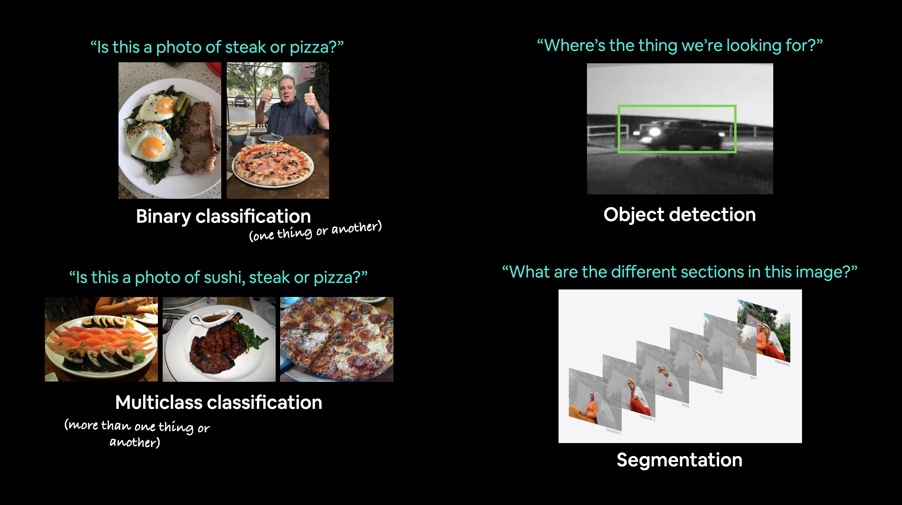
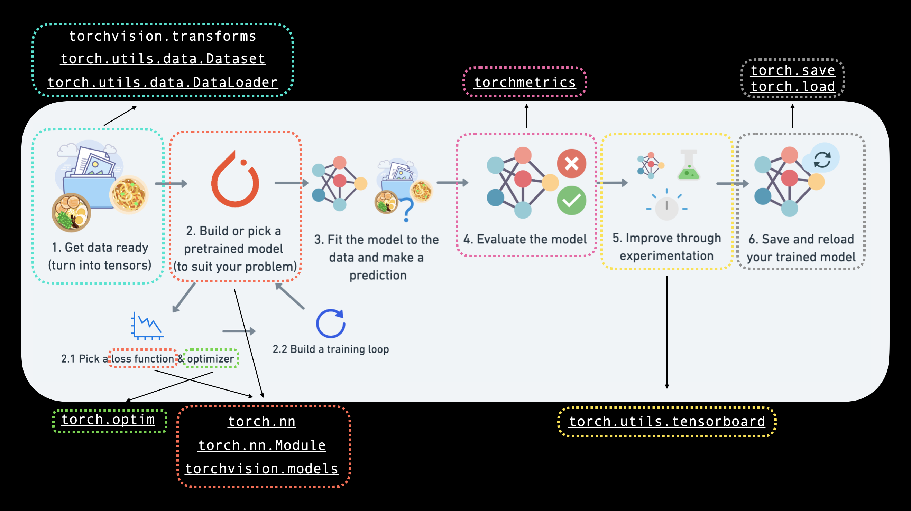
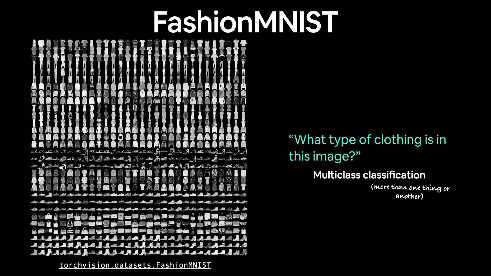
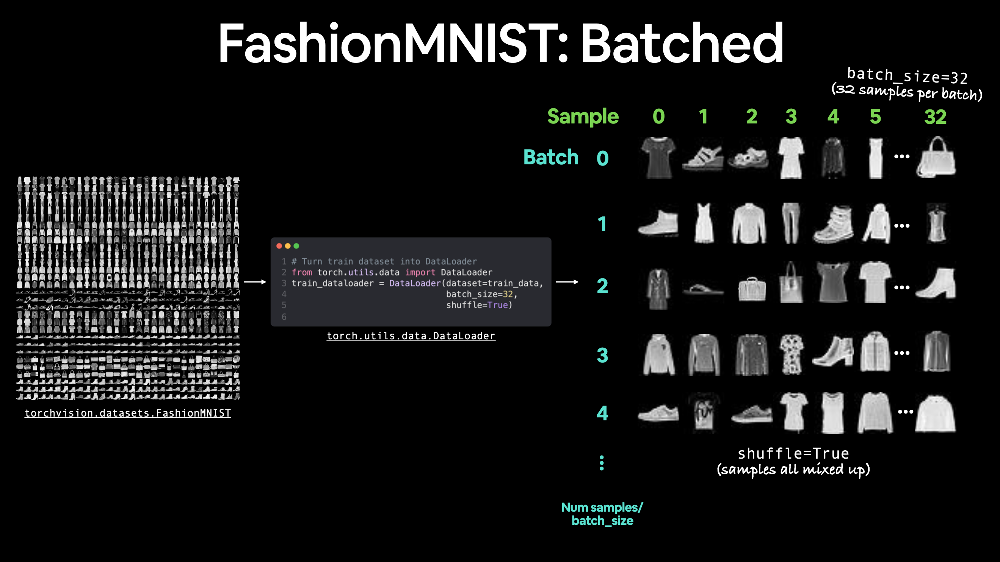
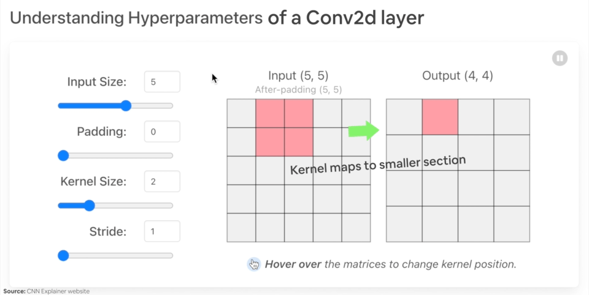
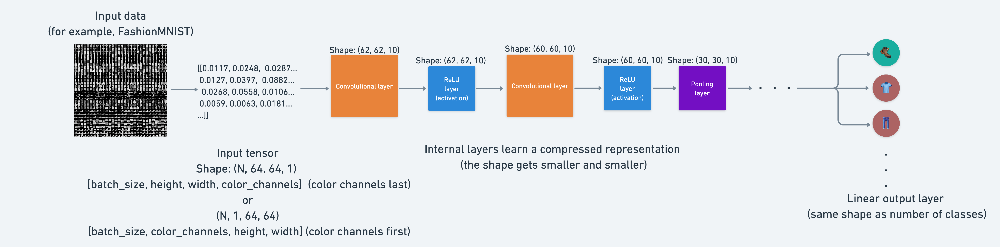

View Slides | Watch Video Walkthrough
03. PyTorch Computer Vision#
Computer vision is the art of teaching a computer to see.
For example, it could involve building a model to classify whether a photo is of a cat or a dog (binary classification).
Or whether a photo is of a cat, dog or chicken (multi-class classification).
Or identifying where a car appears in a video frame (object detection).
Or figuring out where different objects in an image can be separated (panoptic segmentation).
 Example computer vision problems for binary classification, multiclass classification, object detection and segmentation.
Where does computer vision get used?#
If you use a smartphone, you’ve already used computer vision.
Camera and photo apps use computer vision to enhance and sort images.
Modern cars use computer vision to avoid other cars and stay within lane lines.
Manufacturers use computer vision to identify defects in various products.
Security cameras use computer vision to detect potential intruders.
In essence, anything that can described in a visual sense can be a potential computer vision problem.
What we’re going to cover#
We’re going to apply the PyTorch Workflow we’ve been learning in the past couple of sections to computer vision.

Specifically, we’re going to cover:
Topic |
Contents |
|---|---|
0. Computer vision libraries in PyTorch |
PyTorch has a bunch of built-in helpful computer vision libraries, let’s check them out. |
1. Load data |
To practice computer vision, we’ll start with some images of different pieces of clothing from FashionMNIST. |
2. Prepare data |
We’ve got some images, let’s load them in with a PyTorch |
3. Model 0: Building a baseline model |
Here we’ll create a multi-class classification model to learn patterns in the data, we’ll also choose a loss function, optimizer and build a training loop. |
4. Making predictions and evaluting model 0 |
Let’s make some predictions with our baseline model and evaluate them. |
5. Setup device agnostic code for future models |
It’s best practice to write device-agnostic code, so let’s set it up. |
6. Model 1: Adding non-linearity |
Experimenting is a large part of machine learning, let’s try and improve upon our baseline model by adding non-linear layers. |
7. Model 2: Convolutional Neural Network (CNN) |
Time to get computer vision specific and introduce the powerful convolutional neural network architecture. |
8. Comparing our models |
We’ve built three different models, let’s compare them. |
9. Evaluating our best model |
Let’s make some predictons on random images and evaluate our best model. |
10. Making a confusion matrix |
A confusion matrix is a great way to evaluate a classification model, let’s see how we can make one. |
11. Saving and loading the best performing model |
Since we might want to use our model for later, let’s save it and make sure it loads back in correctly. |
0. Computer vision libraries in PyTorch#
Before we get started writing code, let’s talk about some PyTorch computer vision libraries you should be aware of.
PyTorch module |
What does it do? |
|---|---|
Contains datasets, model architectures and image transformations often used for computer vision problems. |
|
Here you’ll find many example computer vision datasets for a range of problems from image classification, object detection, image captioning, video classification and more. It also contains a series of base classes for making custom datasets. |
|
This module contains well-performing and commonly used computer vision model architectures implemented in PyTorch, you can use these with your own problems. |
|
Often images need to be transformed (turned into numbers/processed/augmented) before being used with a model, common image transformations are found here. |
|
Base dataset class for PyTorch. |
|
Creates a Python iteralbe over a dataset (created with |
Note: The
torch.utils.data.Datasetandtorch.utils.data.DataLoaderclasses aren’t only for computer vision in PyTorch, they are capable of dealing with many different types of data.
Now we’ve covered some of the most important PyTorch computer vision libraries, let’s import the relevant dependencies.
# Import PyTorch
import torch
from torch import nn
# Import torchvision
import torchvision
from torchvision import datasets
from torchvision.transforms import ToTensor
# Import matplotlib for visualization
import matplotlib.pyplot as plt
# Check versions
# Note: your PyTorch version shouldn't be lower than 1.10.0 and torchvision version shouldn't be lower than 0.11
print(f"PyTorch version: {torch.__version__} \ntorchvision version: {torchvision.__version__}")
PyTorch version: 1.13.1
torchvision version: 0.14.1
1. Getting a dataset#
To begin working on a computer vision problem, let’s get a computer vision dataset.
We’re going to start with FashionMNIST.
MNIST stands for Modified National Institute of Standards and Technology.
The original MNIST dataset contains thousands of examples of handwritten digits (from 0 to 9) and was used to build computer vision models to identify numbers for postal services.
FashionMNIST, made by Zalando Research, is a similar setup.
Except it contains grayscale images of 10 different kinds of clothing.

torchvision.datasets contains a lot of example datasets you can use to practice writing computer vision code on. FashionMNIST is one of those datasets. And since it has 10 different image classes (different types of clothing), it’s a multi-class classification problem.
Later, we’ll be building a computer vision neural network to identify the different styles of clothing in these images.
PyTorch has a bunch of common computer vision datasets stored in torchvision.datasets.
Including FashionMNIST in torchvision.datasets.FashionMNIST().
To download it, we provide the following parameters:
root: str- which folder do you want to download the data to?train: Bool- do you want the training or test split?download: Bool- should the data be downloaded?transform: torchvision.transforms- what transformations would you like to do on the data?target_transform- you can transform the targets (labels) if you like too.
Many other datasets in torchvision have these parameter options.
# Setup training data
train_data = datasets.FashionMNIST(
root="data", # where to download data to?
train=True, # get training data
download=True, # download data if it doesn't exist on disk
transform=ToTensor(), # images come as PIL format, we want to turn into Torch tensors
target_transform=None # you can transform labels as well
)
# Setup testing data
test_data = datasets.FashionMNIST(
root="data",
train=False, # get test data
download=True,
transform=ToTensor()
)
Let’s check out the first sample of the training data.
# See first training sample
image, label = train_data[0]
image, label
(tensor([[[0.0000, 0.0000, 0.0000, 0.0000, 0.0000, 0.0000, 0.0000, 0.0000,
0.0000, 0.0000, 0.0000, 0.0000, 0.0000, 0.0000, 0.0000, 0.0000,
0.0000, 0.0000, 0.0000, 0.0000, 0.0000, 0.0000, 0.0000, 0.0000,
0.0000, 0.0000, 0.0000, 0.0000],
[0.0000, 0.0000, 0.0000, 0.0000, 0.0000, 0.0000, 0.0000, 0.0000,
0.0000, 0.0000, 0.0000, 0.0000, 0.0000, 0.0000, 0.0000, 0.0000,
0.0000, 0.0000, 0.0000, 0.0000, 0.0000, 0.0000, 0.0000, 0.0000,
0.0000, 0.0000, 0.0000, 0.0000],
[0.0000, 0.0000, 0.0000, 0.0000, 0.0000, 0.0000, 0.0000, 0.0000,
0.0000, 0.0000, 0.0000, 0.0000, 0.0000, 0.0000, 0.0000, 0.0000,
0.0000, 0.0000, 0.0000, 0.0000, 0.0000, 0.0000, 0.0000, 0.0000,
0.0000, 0.0000, 0.0000, 0.0000],
[0.0000, 0.0000, 0.0000, 0.0000, 0.0000, 0.0000, 0.0000, 0.0000,
0.0000, 0.0000, 0.0000, 0.0000, 0.0039, 0.0000, 0.0000, 0.0510,
0.2863, 0.0000, 0.0000, 0.0039, 0.0157, 0.0000, 0.0000, 0.0000,
0.0000, 0.0039, 0.0039, 0.0000],
[0.0000, 0.0000, 0.0000, 0.0000, 0.0000, 0.0000, 0.0000, 0.0000,
0.0000, 0.0000, 0.0000, 0.0000, 0.0118, 0.0000, 0.1412, 0.5333,
0.4980, 0.2431, 0.2118, 0.0000, 0.0000, 0.0000, 0.0039, 0.0118,
0.0157, 0.0000, 0.0000, 0.0118],
[0.0000, 0.0000, 0.0000, 0.0000, 0.0000, 0.0000, 0.0000, 0.0000,
0.0000, 0.0000, 0.0000, 0.0000, 0.0235, 0.0000, 0.4000, 0.8000,
0.6902, 0.5255, 0.5647, 0.4824, 0.0902, 0.0000, 0.0000, 0.0000,
0.0000, 0.0471, 0.0392, 0.0000],
[0.0000, 0.0000, 0.0000, 0.0000, 0.0000, 0.0000, 0.0000, 0.0000,
0.0000, 0.0000, 0.0000, 0.0000, 0.0000, 0.0000, 0.6078, 0.9255,
0.8118, 0.6980, 0.4196, 0.6118, 0.6314, 0.4275, 0.2510, 0.0902,
0.3020, 0.5098, 0.2824, 0.0588],
[0.0000, 0.0000, 0.0000, 0.0000, 0.0000, 0.0000, 0.0000, 0.0000,
0.0000, 0.0000, 0.0000, 0.0039, 0.0000, 0.2706, 0.8118, 0.8745,
0.8549, 0.8471, 0.8471, 0.6392, 0.4980, 0.4745, 0.4784, 0.5725,
0.5529, 0.3451, 0.6745, 0.2588],
[0.0000, 0.0000, 0.0000, 0.0000, 0.0000, 0.0000, 0.0000, 0.0000,
0.0000, 0.0039, 0.0039, 0.0039, 0.0000, 0.7843, 0.9098, 0.9098,
0.9137, 0.8980, 0.8745, 0.8745, 0.8431, 0.8353, 0.6431, 0.4980,
0.4824, 0.7686, 0.8980, 0.0000],
[0.0000, 0.0000, 0.0000, 0.0000, 0.0000, 0.0000, 0.0000, 0.0000,
0.0000, 0.0000, 0.0000, 0.0000, 0.0000, 0.7176, 0.8824, 0.8471,
0.8745, 0.8941, 0.9216, 0.8902, 0.8784, 0.8706, 0.8784, 0.8667,
0.8745, 0.9608, 0.6784, 0.0000],
[0.0000, 0.0000, 0.0000, 0.0000, 0.0000, 0.0000, 0.0000, 0.0000,
0.0000, 0.0000, 0.0000, 0.0000, 0.0000, 0.7569, 0.8941, 0.8549,
0.8353, 0.7765, 0.7059, 0.8314, 0.8235, 0.8275, 0.8353, 0.8745,
0.8627, 0.9529, 0.7922, 0.0000],
[0.0000, 0.0000, 0.0000, 0.0000, 0.0000, 0.0000, 0.0000, 0.0000,
0.0000, 0.0039, 0.0118, 0.0000, 0.0471, 0.8588, 0.8627, 0.8314,
0.8549, 0.7529, 0.6627, 0.8902, 0.8157, 0.8549, 0.8784, 0.8314,
0.8863, 0.7725, 0.8196, 0.2039],
[0.0000, 0.0000, 0.0000, 0.0000, 0.0000, 0.0000, 0.0000, 0.0000,
0.0000, 0.0000, 0.0235, 0.0000, 0.3882, 0.9569, 0.8706, 0.8627,
0.8549, 0.7961, 0.7765, 0.8667, 0.8431, 0.8353, 0.8706, 0.8627,
0.9608, 0.4667, 0.6549, 0.2196],
[0.0000, 0.0000, 0.0000, 0.0000, 0.0000, 0.0000, 0.0000, 0.0000,
0.0000, 0.0157, 0.0000, 0.0000, 0.2157, 0.9255, 0.8941, 0.9020,
0.8941, 0.9412, 0.9098, 0.8353, 0.8549, 0.8745, 0.9176, 0.8510,
0.8510, 0.8196, 0.3608, 0.0000],
[0.0000, 0.0000, 0.0039, 0.0157, 0.0235, 0.0275, 0.0078, 0.0000,
0.0000, 0.0000, 0.0000, 0.0000, 0.9294, 0.8863, 0.8510, 0.8745,
0.8706, 0.8588, 0.8706, 0.8667, 0.8471, 0.8745, 0.8980, 0.8431,
0.8549, 1.0000, 0.3020, 0.0000],
[0.0000, 0.0118, 0.0000, 0.0000, 0.0000, 0.0000, 0.0000, 0.0000,
0.0000, 0.2431, 0.5686, 0.8000, 0.8941, 0.8118, 0.8353, 0.8667,
0.8549, 0.8157, 0.8275, 0.8549, 0.8784, 0.8745, 0.8588, 0.8431,
0.8784, 0.9569, 0.6235, 0.0000],
[0.0000, 0.0000, 0.0000, 0.0000, 0.0706, 0.1725, 0.3216, 0.4196,
0.7412, 0.8941, 0.8627, 0.8706, 0.8510, 0.8863, 0.7843, 0.8039,
0.8275, 0.9020, 0.8784, 0.9176, 0.6902, 0.7373, 0.9804, 0.9725,
0.9137, 0.9333, 0.8431, 0.0000],
[0.0000, 0.2235, 0.7333, 0.8157, 0.8784, 0.8667, 0.8784, 0.8157,
0.8000, 0.8392, 0.8157, 0.8196, 0.7843, 0.6235, 0.9608, 0.7569,
0.8078, 0.8745, 1.0000, 1.0000, 0.8667, 0.9176, 0.8667, 0.8275,
0.8627, 0.9098, 0.9647, 0.0000],
[0.0118, 0.7922, 0.8941, 0.8784, 0.8667, 0.8275, 0.8275, 0.8392,
0.8039, 0.8039, 0.8039, 0.8627, 0.9412, 0.3137, 0.5882, 1.0000,
0.8980, 0.8667, 0.7373, 0.6039, 0.7490, 0.8235, 0.8000, 0.8196,
0.8706, 0.8941, 0.8824, 0.0000],
[0.3843, 0.9137, 0.7765, 0.8235, 0.8706, 0.8980, 0.8980, 0.9176,
0.9765, 0.8627, 0.7608, 0.8431, 0.8510, 0.9451, 0.2549, 0.2863,
0.4157, 0.4588, 0.6588, 0.8588, 0.8667, 0.8431, 0.8510, 0.8745,
0.8745, 0.8784, 0.8980, 0.1137],
[0.2941, 0.8000, 0.8314, 0.8000, 0.7569, 0.8039, 0.8275, 0.8824,
0.8471, 0.7255, 0.7725, 0.8078, 0.7765, 0.8353, 0.9412, 0.7647,
0.8902, 0.9608, 0.9373, 0.8745, 0.8549, 0.8314, 0.8196, 0.8706,
0.8627, 0.8667, 0.9020, 0.2627],
[0.1882, 0.7961, 0.7176, 0.7608, 0.8353, 0.7725, 0.7255, 0.7451,
0.7608, 0.7529, 0.7922, 0.8392, 0.8588, 0.8667, 0.8627, 0.9255,
0.8824, 0.8471, 0.7804, 0.8078, 0.7294, 0.7098, 0.6941, 0.6745,
0.7098, 0.8039, 0.8078, 0.4510],
[0.0000, 0.4784, 0.8588, 0.7569, 0.7020, 0.6706, 0.7176, 0.7686,
0.8000, 0.8235, 0.8353, 0.8118, 0.8275, 0.8235, 0.7843, 0.7686,
0.7608, 0.7490, 0.7647, 0.7490, 0.7765, 0.7529, 0.6902, 0.6118,
0.6549, 0.6941, 0.8235, 0.3608],
[0.0000, 0.0000, 0.2902, 0.7412, 0.8314, 0.7490, 0.6863, 0.6745,
0.6863, 0.7098, 0.7255, 0.7373, 0.7412, 0.7373, 0.7569, 0.7765,
0.8000, 0.8196, 0.8235, 0.8235, 0.8275, 0.7373, 0.7373, 0.7608,
0.7529, 0.8471, 0.6667, 0.0000],
[0.0078, 0.0000, 0.0000, 0.0000, 0.2588, 0.7843, 0.8706, 0.9294,
0.9373, 0.9490, 0.9647, 0.9529, 0.9569, 0.8667, 0.8627, 0.7569,
0.7490, 0.7020, 0.7137, 0.7137, 0.7098, 0.6902, 0.6510, 0.6588,
0.3882, 0.2275, 0.0000, 0.0000],
[0.0000, 0.0000, 0.0000, 0.0000, 0.0000, 0.0000, 0.0000, 0.1569,
0.2392, 0.1725, 0.2824, 0.1608, 0.1373, 0.0000, 0.0000, 0.0000,
0.0000, 0.0000, 0.0000, 0.0000, 0.0000, 0.0000, 0.0000, 0.0000,
0.0000, 0.0000, 0.0000, 0.0000],
[0.0000, 0.0000, 0.0000, 0.0000, 0.0000, 0.0000, 0.0000, 0.0000,
0.0000, 0.0000, 0.0000, 0.0000, 0.0000, 0.0000, 0.0000, 0.0000,
0.0000, 0.0000, 0.0000, 0.0000, 0.0000, 0.0000, 0.0000, 0.0000,
0.0000, 0.0000, 0.0000, 0.0000],
[0.0000, 0.0000, 0.0000, 0.0000, 0.0000, 0.0000, 0.0000, 0.0000,
0.0000, 0.0000, 0.0000, 0.0000, 0.0000, 0.0000, 0.0000, 0.0000,
0.0000, 0.0000, 0.0000, 0.0000, 0.0000, 0.0000, 0.0000, 0.0000,
0.0000, 0.0000, 0.0000, 0.0000]]]),
9)
1.1 Input and output shapes of a computer vision model#
We’ve got a big tensor of values (the image) leading to a single value for the target (the label).
Let’s see the image shape.
# What's the shape of the image?
image.shape
torch.Size([1, 28, 28])
The shape of the image tensor is [1, 28, 28] or more specifically:
[color_channels=1, height=28, width=28]
Having color_channels=1 means the image is grayscale.
 Various problems will have various input and output shapes. But the premise reamins: encode data into numbers, build a model to find patterns in those numbers, convert those patterns into something meaningful.
Various problems will have various input and output shapes. But the premise reamins: encode data into numbers, build a model to find patterns in those numbers, convert those patterns into something meaningful.
If color_channels=3, the image comes in pixel values for red, green and blue (this is also known a the RGB color model).
The order of our current tensor is often referred to as CHW (Color Channels, Height, Width).
There’s debate on whether images should be represented as CHW (color channels first) or HWC (color channels last).
Note: You’ll also see
NCHWandNHWCformats whereNstands for number of images. For example if you have abatch_size=32, your tensor shape may be[32, 1, 28, 28]. We’ll cover batch sizes later.
PyTorch generally accepts NCHW (channels first) as the default for many operators.
However, PyTorch also explains that NHWC (channels last) performs better and is considered best practice.
For now, since our dataset and models are relatively small, this won’t make too much of a difference.
But keep it in mind for when you’re working on larger image datasets and using convolutional neural networks (we’ll see these later).
Let’s check out more shapes of our data.
# How many samples are there?
len(train_data.data), len(train_data.targets), len(test_data.data), len(test_data.targets)
(60000, 60000, 10000, 10000)
So we’ve got 60,000 training samples and 10,000 testing samples.
What classes are there?
We can find these via the .classes attribute.
# See classes
class_names = train_data.classes
class_names
['T-shirt/top',
'Trouser',
'Pullover',
'Dress',
'Coat',
'Sandal',
'Shirt',
'Sneaker',
'Bag',
'Ankle boot']
Sweet! It looks like we’re dealing with 10 different kinds of clothes.
Because we’re working with 10 different classes, it means our problem is multi-class classification.
Let’s get visual.
1.2 Visualizing our data#
import matplotlib.pyplot as plt
image, label = train_data[0]
print(f"Image shape: {image.shape}")
plt.imshow(image.squeeze()) # image shape is [1, 28, 28] (colour channels, height, width)
plt.title(label);
Image shape: torch.Size([1, 28, 28])
We can turn the image into grayscale using the cmap parameter of plt.imshow().
plt.imshow(image.squeeze(), cmap="gray")
plt.title(class_names[label]);
Beautiful, well as beautiful as a pixelated grayscale ankle boot can get.
Let’s view a few more.
# Plot more images
torch.manual_seed(42)
fig = plt.figure(figsize=(9, 9))
rows, cols = 4, 4
for i in range(1, rows * cols + 1):
random_idx = torch.randint(0, len(train_data), size=[1]).item()
img, label = train_data[random_idx]
fig.add_subplot(rows, cols, i)
plt.imshow(img.squeeze(), cmap="gray")
plt.title(class_names[label])
plt.axis(False);
Hmmm, this dataset doesn’t look too aesthetic.
But the principles we’re going to learn on how to build a model for it will be similar across a wide range of computer vision problems.
In essence, taking pixel values and building a model to find patterns in them to use on future pixel values.
Plus, even for this small dataset (yes, even 60,000 images in deep learning is considered quite small), could you write a program to classify each one of them?
You probably could.
But I think coding a model in PyTorch would be faster.
Question: Do you think the above data can be model with only straight (linear) lines? Or do you think you’d also need non-straight (non-linear) lines?
2. Prepare DataLoader#
Now we’ve got a dataset ready to go.
The next step is to prepare it with a torch.utils.data.DataLoader or DataLoader for short.
The DataLoader does what you think it might do.
It helps load data into a model.
For training and for inference.
It turns a large Dataset into a Python iterable of smaller chunks.
These smaller chunks are called batches or mini-batches and can be set by the batch_size parameter.
Why do this?
Because it’s more computationally efficient.
In an ideal world you could do the forward pass and backward pass across all of your data at once.
But once you start using really large datasets, unless you’ve got infinite computing power, it’s easier to break them up into batches.
It also gives your model more opportunities to improve.
With mini-batches (small portions of the data), gradient descent is performed more often per epoch (once per mini-batch rather than once per epoch).
What’s a good batch size?
32 is a good place to start for a fair amount of problems.
But since this is a value you can set (a hyperparameter) you can try all different kinds of values, though generally powers of 2 are used most often (e.g. 32, 64, 128, 256, 512).
 Batching FashionMNIST with a batch size of 32 and shuffle turned on. A similar batching process will occur for other datasets but will differ depending on the batch size.
Let’s create DataLoader’s for our training and test sets.
from torch.utils.data import DataLoader
# Setup the batch size hyperparameter
BATCH_SIZE = 32
# Turn datasets into iterables (batches)
train_dataloader = DataLoader(train_data, # dataset to turn into iterable
batch_size=BATCH_SIZE, # how many samples per batch?
shuffle=True # shuffle data every epoch?
)
test_dataloader = DataLoader(test_data,
batch_size=BATCH_SIZE,
shuffle=False # don't necessarily have to shuffle the testing data
)
# Let's check out what we've created
print(f"Dataloaders: {train_dataloader, test_dataloader}")
print(f"Length of train dataloader: {len(train_dataloader)} batches of {BATCH_SIZE}")
print(f"Length of test dataloader: {len(test_dataloader)} batches of {BATCH_SIZE}")
Dataloaders: (<torch.utils.data.dataloader.DataLoader object at 0x0000025E71AF3E50>, <torch.utils.data.dataloader.DataLoader object at 0x0000025E6F01C520>)
Length of train dataloader: 1875 batches of 32
Length of test dataloader: 313 batches of 32
# Check out what's inside the training dataloader
train_features_batch, train_labels_batch = next(iter(train_dataloader))
train_features_batch.shape, train_labels_batch.shape
(torch.Size([32, 1, 28, 28]), torch.Size([32]))
And we can see that the data remains unchanged by checking a single sample.
# Show a sample
torch.manual_seed(42)
random_idx = torch.randint(0, len(train_features_batch), size=[1]).item()
img, label = train_features_batch[random_idx], train_labels_batch[random_idx]
plt.imshow(img.squeeze(), cmap="gray")
plt.title(class_names[label])
plt.axis("Off");
print(f"Image size: {img.shape}")
print(f"Label: {label}, label size: {label.shape}")
Image size: torch.Size([1, 28, 28])
Label: 6, label size: torch.Size([])
3. Model 0: Build a baseline model#
Data loaded and prepared!
Time to build a baseline model by subclassing nn.Module.
A baseline model is one of the simplest models you can imagine.
You use the baseline as a starting point and try to improve upon it with subsequent, more complicated models.
Our baseline will consist of two nn.Linear() layers.
We’ve done this in a previous section but there’s going to one slight difference.
Because we’re working with image data, we’re going to use a different layer to start things off.
And that’s the nn.Flatten() layer.
nn.Flatten() compresses the dimensions of a tensor into a single vector.
This is easier to understand when you see it.
# Create a flatten layer
flatten_model = nn.Flatten() # all nn modules function as a model (can do a forward pass)
# Get a single sample
x = train_features_batch[0]
# Flatten the sample
output = flatten_model(x) # perform forward pass
# Print out what happened
print(f"Shape before flattening: {x.shape} -> [color_channels, height, width]")
print(f"Shape after flattening: {output.shape} -> [color_channels, height*width]")
# Try uncommenting below and see what happens
#print(x)
#print(output)
Shape before flattening: torch.Size([1, 28, 28]) -> [color_channels, height, width]
Shape after flattening: torch.Size([1, 784]) -> [color_channels, height*width]
The nn.Flatten() layer took our shape from [color_channels, height, width] to [color_channels, height*width].
Why do this?
Because we’ve now turned our pixel data from height and width dimensions into one long feature vector.
And nn.Linear() layers like their inputs to be in the form of feature vectors.
Let’s create our first model using nn.Flatten() as the first layer.
from torch import nn
class FashionMNISTModelV0(nn.Module):
def __init__(self, input_shape: int, hidden_units: int, output_shape: int):
super().__init__()
self.layer_stack = nn.Sequential(
nn.Flatten(), # neural networks like their inputs in vector form
nn.Linear(in_features=input_shape, out_features=hidden_units), # in_features = number of features in a data sample (784 pixels)
nn.Linear(in_features=hidden_units, out_features=output_shape)
)
def forward(self, x):
return self.layer_stack(x)
Wonderful!
We’ve got a baseline model class we can use, now let’s instantiate a model.
We’ll need to set the following parameters:
input_shape=784- this is how many features you’ve got going in the model, in our case, it’s one for every pixel in the target image (28 pixels high by 28 pixels wide = 784 features).hidden_units=10- number of units/neurons in the hidden layer(s), this number could be whatever you want but to keep the model small we’ll start with10.output_shape=len(class_names)- since we’re working with a multi-class classification problem, we need an output neuron per class in our dataset.
Let’s create an instance of our model and send to the CPU for now (we’ll run a small test for running model_0 on CPU vs. a similar model on GPU soon).
torch.manual_seed(42)
# Need to setup model with input parameters
model_0 = FashionMNISTModelV0(input_shape=784, # one for every pixel (28x28)
hidden_units=10, # how many units in the hiden layer
output_shape=len(class_names) # one for every class
)
model_0.to("cpu") # keep model on CPU to begin with
FashionMNISTModelV0(
(layer_stack): Sequential(
(0): Flatten(start_dim=1, end_dim=-1)
(1): Linear(in_features=784, out_features=10, bias=True)
(2): Linear(in_features=10, out_features=10, bias=True)
)
)
3.1 Setup loss, optimizer and evaluation metrics#
Since we’re working on a classification problem, let’s bring in our helper_functions.py script and subsequently the accuracy_fn() we defined in notebook 02.
Note: Rather than importing and using our own accuracy function or evaluation metric(s), you could import various evaluation metrics from the TorchMetrics package.
import requests
from pathlib import Path
# Download helper functions from Learn PyTorch repo (if not already downloaded)
if Path("helper_functions.py").is_file():
print("helper_functions.py already exists, skipping download")
else:
print("Downloading helper_functions.py")
# Note: you need the "raw" GitHub URL for this to work
request = requests.get("helper_functions.py")
with open("helper_functions.py", "wb") as f:
f.write(request.content)
helper_functions.py already exists, skipping download
# Import accuracy metric
from helper_functions import accuracy_fn # Note: could also use torchmetrics.Accuracy()
# Setup loss function and optimizer
loss_fn = nn.CrossEntropyLoss() # this is also called "criterion"/"cost function" in some places
optimizer = torch.optim.SGD(params=model_0.parameters(), lr=0.1)
3.2 Creating a function to time our experiments#
Loss function and optimizer ready!
It’s time to start training a model.
But how about we do a little experiment while we train.
I mean, let’s make a timing function to measure the time it takes our model to train on CPU versus using a GPU.
We’ll train this model on the CPU but the next one on the GPU and see what happens.
Our timing function will import the timeit.default_timer() function from the Python timeit module.
from timeit import default_timer as timer
def print_train_time(start: float, end: float, device: torch.device = None):
"""Prints difference between start and end time.
Args:
start (float): Start time of computation (preferred in timeit format).
end (float): End time of computation.
device ([type], optional): Device that compute is running on. Defaults to None.
Returns:
float: time between start and end in seconds (higher is longer).
"""
total_time = end - start
print(f"Train time on {device}: {total_time:.3f} seconds")
return total_time
3.3 Creating a training loop and training a model on batches of data#
Beautiful!
Looks like we’ve got all of the pieces of the puzzle ready to go, a timer, a loss function, an optimizer, a model and most importantly, some data.
Let’s now create a training loop and a testing loop to train and evaluate our model.
We’ll be using the same steps as the previous notebook(s), though since our data is now in batch form, we’ll add another loop to loop through our data batches.
Our data batches are contained within our DataLoaders, train_dataloader and test_dataloader for the training and test data splits respectively.
A batch is BATCH_SIZE samples of X (features) and y (labels), since we’re using BATCH_SIZE=32, our batches have 32 samples of images and targets.
And since we’re computing on batches of data, our loss and evaluation metrics will be calculated per batch rather than across the whole dataset.
This means we’ll have to divide our loss and accuracy values by the number of batches in each dataset’s respective dataloader.
Let’s step through it:
Loop through epochs.
Loop through training batches, perform training steps, calculate the train loss per batch.
Loop through testing batches, perform testing steps, calculate the test loss per batch.
Print out what’s happening.
Time it all (for fun).
A fair few steps but…
…if in doubt, code it out.
# Import tqdm for progress bar
from tqdm.auto import tqdm
# Set the seed and start the timer
torch.manual_seed(42)
train_time_start_on_cpu = timer()
# Set the number of epochs (we'll keep this small for faster training times)
epochs = 3
# Create training and testing loop
for epoch in tqdm(range(epochs)):
print(f"Epoch: {epoch}\n-------")
### Training
train_loss = 0
# Add a loop to loop through training batches
for batch, (X, y) in enumerate(train_dataloader):
model_0.train()
# 1. Forward pass
y_pred = model_0(X)
# 2. Calculate loss (per batch)
loss = loss_fn(y_pred, y)
train_loss += loss # accumulatively add up the loss per epoch
# 3. Optimizer zero grad
optimizer.zero_grad()
# 4. Loss backward
loss.backward()
# 5. Optimizer step
optimizer.step()
# Print out how many samples have been seen
if batch % 400 == 0:
print(f"Looked at {batch * len(X)}/{len(train_dataloader.dataset)} samples")
# Divide total train loss by length of train dataloader (average loss per batch per epoch)
train_loss /= len(train_dataloader)
### Testing
# Setup variables for accumulatively adding up loss and accuracy
test_loss, test_acc = 0, 0
model_0.eval()
with torch.inference_mode():
for X, y in test_dataloader:
# 1. Forward pass
test_pred = model_0(X)
# 2. Calculate loss (accumatively)
test_loss += loss_fn(test_pred, y) # accumulatively add up the loss per epoch
# 3. Calculate accuracy (preds need to be same as y_true)
test_acc += accuracy_fn(y_true=y, y_pred=test_pred.argmax(dim=1))
# Calculations on test metrics need to happen inside torch.inference_mode()
# Divide total test loss by length of test dataloader (per batch)
test_loss /= len(test_dataloader)
# Divide total accuracy by length of test dataloader (per batch)
test_acc /= len(test_dataloader)
## Print out what's happening
print(f"\nTrain loss: {train_loss:.5f} | Test loss: {test_loss:.5f}, Test acc: {test_acc:.2f}%\n")
# Calculate training time
train_time_end_on_cpu = timer()
total_train_time_model_0 = print_train_time(start=train_time_start_on_cpu,
end=train_time_end_on_cpu,
device=str(next(model_0.parameters()).device))
Epoch: 0
-------
Looked at 0/60000 samples
Looked at 12800/60000 samples
Looked at 25600/60000 samples
Looked at 38400/60000 samples
Looked at 51200/60000 samples
Train loss: 0.59039 | Test loss: 0.50954, Test acc: 82.04%
Epoch: 1
-------
Looked at 0/60000 samples
Looked at 12800/60000 samples
Looked at 25600/60000 samples
Looked at 38400/60000 samples
Looked at 51200/60000 samples
Train loss: 0.47633 | Test loss: 0.47989, Test acc: 83.20%
Epoch: 2
-------
Looked at 0/60000 samples
Looked at 12800/60000 samples
Looked at 25600/60000 samples
Looked at 38400/60000 samples
Looked at 51200/60000 samples
Train loss: 0.45503 | Test loss: 0.47664, Test acc: 83.43%
Train time on cpu: 30.037 seconds
Nice! Looks like our baseline model did fairly well.
It didn’t take too long to train either, even just on the CPU, I wonder if it’ll speed up on the GPU?
Let’s write some code to evaluate our model.
4. Make predictions and get Model 0 results#
Since we’re going to be building a few models, it’s a good idea to write some code to evaluate them all in similar ways.
Namely, let’s create a function that takes in a trained model, a DataLoader, a loss function and an accuracy function.
The function will use the model to make predictions on the data in the DataLoader and then we can evaluate those predictions using the loss function and accuracy function.
torch.manual_seed(42)
def eval_model(model: torch.nn.Module,
data_loader: torch.utils.data.DataLoader,
loss_fn: torch.nn.Module,
accuracy_fn):
"""Returns a dictionary containing the results of model predicting on data_loader.
Args:
model (torch.nn.Module): A PyTorch model capable of making predictions on data_loader.
data_loader (torch.utils.data.DataLoader): The target dataset to predict on.
loss_fn (torch.nn.Module): The loss function of model.
accuracy_fn: An accuracy function to compare the models predictions to the truth labels.
Returns:
(dict): Results of model making predictions on data_loader.
"""
loss, acc = 0, 0
model.eval()
with torch.inference_mode():
for X, y in data_loader:
# Make predictions with the model
y_pred = model(X)
# Accumulate the loss and accuracy values per batch
loss += loss_fn(y_pred, y)
acc += accuracy_fn(y_true=y,
y_pred=y_pred.argmax(dim=1)) # For accuracy, need the prediction labels (logits -> pred_prob -> pred_labels)
# Scale loss and acc to find the average loss/acc per batch
loss /= len(data_loader)
acc /= len(data_loader)
return {"model_name": model.__class__.__name__, # only works when model was created with a class
"model_loss": loss.item(),
"model_acc": acc}
# Calculate model 0 results on test dataset
model_0_results = eval_model(model=model_0, data_loader=test_dataloader,
loss_fn=loss_fn, accuracy_fn=accuracy_fn
)
model_0_results
{'model_name': 'FashionMNISTModelV0',
'model_loss': 0.4766390025615692,
'model_acc': 83.42651757188499}
Looking good!
We can use this dictionary to compare the baseline model results to other models later on.
5. Setup device agnostic-code (for using a GPU if there is one)#
We’ve seen how long it takes to train ma PyTorch model on 60,000 samples on CPU.
Note: Model training time is dependent on hardware used. Generally, more processors means faster training and smaller models on smaller datasets will often train faster than large models and large datasets.
Now let’s setup some device-agnostic code for our models and data to run on GPU if it’s available.
If you’re running this notebook on Google Colab, and you don’t a GPU turned on yet, it’s now time to turn one on via Runtime -> Change runtime type -> Hardware accelerator -> GPU. If you do this, your runtime will likely reset and you’ll have to run all of the cells above by going Runtime -> Run before.
# Setup device agnostic code
import torch
device = "cuda" if torch.cuda.is_available() else "cpu"
device
'cpu'
Beautiful!
Let’s build another model.
6. Model 1: Building a better model with non-linearity#
We learned about the power of non-linearity in notebook 02.
Seeing the data we’ve been working with, do you think it needs non-linear functions?
And remember, linear means straight and non-linear means non-straight.
Let’s find out.
We’ll do so by recreating a similar model to before, except this time we’ll put non-linear functions (nn.ReLU()) in between each linear layer.
# Create a model with non-linear and linear layers
class FashionMNISTModelV1(nn.Module):
def __init__(self, input_shape: int, hidden_units: int, output_shape: int):
super().__init__()
self.layer_stack = nn.Sequential(
nn.Flatten(), # flatten inputs into single vector
nn.Linear(in_features=input_shape, out_features=hidden_units),
nn.ReLU(),
nn.Linear(in_features=hidden_units, out_features=output_shape),
nn.ReLU()
)
def forward(self, x: torch.Tensor):
return self.layer_stack(x)
That looks good.
Now let’s instantiate it with the same settings we used before.
We’ll need input_shape=784 (equal to the number of features of our image data), hidden_units=10 (starting small and the same as our baseline model) and output_shape=len(class_names) (one output unit per class).
Note: Notice how we kept most of the settings of our model the same except for one change: adding non-linear layers. This is a standard practice for running a series of machine learning experiments, change one thing and see what happens, then do it again, again, again.
torch.manual_seed(42)
model_1 = FashionMNISTModelV1(input_shape=784, # number of input features
hidden_units=10,
output_shape=len(class_names) # number of output classes desired
).to(device) # send model to GPU if it's available
next(model_1.parameters()).device # check model device
device(type='cpu')
6.1 Setup loss, optimizer and evaluation metrics#
As usual, we’ll setup a loss function, an optimizer and an evaluation metric (we could do multiple evaluation metrics but we’ll stick with accuracy for now).
from helper_functions import accuracy_fn
loss_fn = nn.CrossEntropyLoss()
optimizer = torch.optim.SGD(params=model_1.parameters(), lr=0.1)
6.2 Functionizing training and test loops#
So far we’ve been writing train and test loops over and over.
Let’s write them again but this time we’ll put them in functions so they can be called again and again.
And because we’re using device-agnostic code now, we’ll be sure to call .to(device) on our feature (X) and target (y) tensors.
For the training loop we’ll create a function called train_step() which takes in a model, a DataLoader a loss function and an optimizer.
The testing loop will be similar but it’ll be called test_step() and it’ll take in a model, a DataLoader, a loss function and an evaluation function.
Note: Since these are functions, you can customize them in any way you like. What we’re making here can be considered barebones training and testing functions for our specific classification use case.
def train_step(model: torch.nn.Module,
data_loader: torch.utils.data.DataLoader,
loss_fn: torch.nn.Module,
optimizer: torch.optim.Optimizer,
accuracy_fn,
device: torch.device = device):
train_loss, train_acc = 0, 0
for batch, (X, y) in enumerate(data_loader):
# Send data to GPU
X, y = X.to(device), y.to(device)
# 1. Forward pass
y_pred = model(X)
# 2. Calculate loss
loss = loss_fn(y_pred, y)
train_loss += loss
train_acc += accuracy_fn(y_true=y,
y_pred=y_pred.argmax(dim=1)) # Go from logits -> pred labels
# 3. Optimizer zero grad
optimizer.zero_grad()
# 4. Loss backward
loss.backward()
# 5. Optimizer step
optimizer.step()
# Calculate loss and accuracy per epoch and print out what's happening
train_loss /= len(data_loader)
train_acc /= len(data_loader)
print(f"Train loss: {train_loss:.5f} | Train accuracy: {train_acc:.2f}%")
def test_step(data_loader: torch.utils.data.DataLoader,
model: torch.nn.Module,
loss_fn: torch.nn.Module,
accuracy_fn,
device: torch.device = device):
test_loss, test_acc = 0, 0
model.eval() # put model in eval mode
# Turn on inference context manager
with torch.inference_mode():
for X, y in data_loader:
# Send data to GPU
X, y = X.to(device), y.to(device)
# 1. Forward pass
test_pred = model(X)
# 2. Calculate loss and accuracy
test_loss += loss_fn(test_pred, y)
test_acc += accuracy_fn(y_true=y,
y_pred=test_pred.argmax(dim=1) # Go from logits -> pred labels
)
# Adjust metrics and print out
test_loss /= len(data_loader)
test_acc /= len(data_loader)
print(f"Test loss: {test_loss:.5f} | Test accuracy: {test_acc:.2f}%\n")
Woohoo!
Now we’ve got some functions for training and testing our model, let’s run them.
We’ll do so inside another loop for each epoch.
That way for each epoch we’re going a training and a testing step.
Note: You can customize how often you do a testing step. Sometimes people do them every five epochs or 10 epochs or in our case, every epoch.
Let’s also time things to see how long our code takes to run on the GPU.
torch.manual_seed(42)
# Measure time
from timeit import default_timer as timer
train_time_start_on_gpu = timer()
epochs = 3
for epoch in tqdm(range(epochs)):
print(f"Epoch: {epoch}\n---------")
train_step(data_loader=train_dataloader,
model=model_1,
loss_fn=loss_fn,
optimizer=optimizer,
accuracy_fn=accuracy_fn
)
test_step(data_loader=test_dataloader,
model=model_1,
loss_fn=loss_fn,
accuracy_fn=accuracy_fn
)
train_time_end_on_gpu = timer()
total_train_time_model_1 = print_train_time(start=train_time_start_on_gpu,
end=train_time_end_on_gpu,
device=device)
Epoch: 0
---------
Train loss: 1.09199 | Train accuracy: 61.34%
Test loss: 0.95636 | Test accuracy: 65.00%
Epoch: 1
---------
Train loss: 0.78097 | Train accuracy: 71.94%
Test loss: 0.72611 | Test accuracy: 73.99%
Epoch: 2
---------
Train loss: 0.67040 | Train accuracy: 75.94%
Test loss: 0.69007 | Test accuracy: 74.81%
Train time on cpu: 30.167 seconds
Excellent!
Our model trained but the training time took longer?
Note: The training time on CUDA vs CPU will depend largely on the quality of the CPU/GPU you’re using. Read on for a more explained answer.
Question: “I used a a GPU but my model didn’t train faster, why might that be?”
Answer: Well, one reason could be because your dataset and model are both so small (like the dataset and model we’re working with) the benefits of using a GPU are outweighed by the time it actually takes to transfer the data there.
There’s a small bottleneck between copying data from the CPU memory (default) to the GPU memory.
So for smaller models and datasets, the CPU might actually be the optimal place to compute on.
But for larger datasets and models, the speed of computing the GPU can offer usually far outweighs the cost of getting the data there.
However, this is largely dependant on the hardware you’re using. With practice, you will get used to where the best place to train your models is.
Let’s evaluate our trained model_1 using our eval_model() function and see how it went.
torch.manual_seed(42)
# Note: This will error due to `eval_model()` not using device agnostic code
model_1_results = eval_model(model=model_1,
data_loader=test_dataloader,
loss_fn=loss_fn,
accuracy_fn=accuracy_fn)
model_1_results
{'model_name': 'FashionMNISTModelV1',
'model_loss': 0.6900656223297119,
'model_acc': 74.810303514377}
Oh no!
It looks like our eval_model() function errors out with:
RuntimeError: Expected all tensors to be on the same device, but found at least two devices, cuda:0 and cpu! (when checking argument for argument mat1 in method wrapper_addmm)
It’s because we’ve setup our data and model to use device-agnostic code but not our evaluation function.
How about we fix that by passing a target device parameter to our eval_model() function?
Then we’ll try calculating the results again.
# Move values to device
torch.manual_seed(42)
def eval_model(model: torch.nn.Module,
data_loader: torch.utils.data.DataLoader,
loss_fn: torch.nn.Module,
accuracy_fn,
device: torch.device = device):
"""Evaluates a given model on a given dataset.
Args:
model (torch.nn.Module): A PyTorch model capable of making predictions on data_loader.
data_loader (torch.utils.data.DataLoader): The target dataset to predict on.
loss_fn (torch.nn.Module): The loss function of model.
accuracy_fn: An accuracy function to compare the models predictions to the truth labels.
device (str, optional): Target device to compute on. Defaults to device.
Returns:
(dict): Results of model making predictions on data_loader.
"""
loss, acc = 0, 0
model.eval()
with torch.inference_mode():
for X, y in data_loader:
# Send data to the target device
X, y = X.to(device), y.to(device)
y_pred = model(X)
loss += loss_fn(y_pred, y)
acc += accuracy_fn(y_true=y, y_pred=y_pred.argmax(dim=1))
# Scale loss and acc
loss /= len(data_loader)
acc /= len(data_loader)
return {"model_name": model.__class__.__name__, # only works when model was created with a class
"model_loss": loss.item(),
"model_acc": acc}
# Calculate model 1 results with device-agnostic code
model_1_results = eval_model(model=model_1, data_loader=test_dataloader,
loss_fn=loss_fn, accuracy_fn=accuracy_fn,
device=device
)
model_1_results
{'model_name': 'FashionMNISTModelV1',
'model_loss': 0.6900656223297119,
'model_acc': 74.810303514377}
# Check baseline results
model_0_results
{'model_name': 'FashionMNISTModelV0',
'model_loss': 0.4766390025615692,
'model_acc': 83.42651757188499}
Woah, in this case, it looks like adding non-linearities to our model made it perform worse than the baseline.
That’s a thing to note in machine learning, sometimes the thing you thought should work doesn’t.
And then the thing you thought might not work does.
It’s part science, part art.
From the looks of things, it seems like our model is overfitting on the training data.
Overfitting means our model is learning the training data well but those patterns aren’t generalizing to the testing data.
Two of the main to fix overfitting include:
Using a smaller or different model (some models fit certain kinds of data better than others).
Using a larger dataset (the more data, the more chance a model has to learn generalizable patterns).
There are more, but I’m going to leave that as a challenge for you to explore.
Try searching online, “ways to prevent overfitting in machine learning” and see what comes up.
In the meantime, let’s take a look at number 1: using a different model.
7. Model 2: Building a Convolutional Neural Network (CNN)#
Alright, time to step things up a notch.
It’s time to create a Convolutional Neural Network (CNN or ConvNet).
CNN’s are known for their capabilities to find patterns in visual data.
And since we’re dealing with visual data, let’s see if using a CNN model can improve upon our baseline.
The CNN model we’re going to be using is known as TinyVGG from the CNN Explainer website.
It follows the typical structure of a convolutional neural network:
Input layer -> [Convolutional layer -> activation layer -> pooling layer] -> Output layer
Where the contents of [Convolutional layer -> activation layer -> pooling layer] can be upscaled and repeated multiple times, depending on requirements.
What model should I use?#
Question: Wait, you say CNN’s are good for images, are there any other model types I should be aware of?
Good question.
This table is a good general guide for which model to use (though there are exceptions).
Problem type |
Model to use (generally) |
Code example |
|---|---|---|
Structured data (Excel spreadsheets, row and column data) |
Gradient boosted models, Random Forests, XGBoost |
|
Unstructured data (images, audio, language) |
Convolutional Neural Networks, Transformers |
Note: The table above is only for reference, the model you end up using will be highly dependant on the problem you’re working on and the constraints you have (amount of data, latency requirements).
Enough talking about models, let’s now build a CNN that replicates the model on the CNN Explainer website.

To do so, we’ll leverage the nn.Conv2d() and nn.MaxPool2d() layers from torch.nn.
# Create a convolutional neural network
class FashionMNISTModelV2(nn.Module):
"""
Model architecture copying TinyVGG from:
https://poloclub.github.io/cnn-explainer/
"""
def __init__(self, input_shape: int, hidden_units: int, output_shape: int):
super().__init__()
self.block_1 = nn.Sequential(
nn.Conv2d(in_channels=input_shape,
out_channels=hidden_units,
kernel_size=3, # how big is the square that's going over the image?
stride=1, # default
padding=1),# options = "valid" (no padding) or "same" (output has same shape as input) or int for specific number
nn.ReLU(),
nn.Conv2d(in_channels=hidden_units,
out_channels=hidden_units,
kernel_size=3,
stride=1,
padding=1),
nn.ReLU(),
nn.MaxPool2d(kernel_size=2,
stride=2) # default stride value is same as kernel_size
)
self.block_2 = nn.Sequential(
nn.Conv2d(hidden_units, hidden_units, 3, padding=1),
nn.ReLU(),
nn.Conv2d(hidden_units, hidden_units, 3, padding=1),
nn.ReLU(),
nn.MaxPool2d(2)
)
self.classifier = nn.Sequential(
nn.Flatten(),
# Where did this in_features shape come from?
# It's because each layer of our network compresses and changes the shape of our inputs data.
nn.Linear(in_features=hidden_units*7*7,
out_features=output_shape)
)
def forward(self, x: torch.Tensor):
x = self.block_1(x)
# print(x.shape)
x = self.block_2(x)
# print(x.shape)
x = self.classifier(x)
# print(x.shape)
return x
torch.manual_seed(42)
model_2 = FashionMNISTModelV2(input_shape=1,
hidden_units=10,
output_shape=len(class_names)).to(device)
model_2
FashionMNISTModelV2(
(block_1): Sequential(
(0): Conv2d(1, 10, kernel_size=(3, 3), stride=(1, 1), padding=(1, 1))
(1): ReLU()
(2): Conv2d(10, 10, kernel_size=(3, 3), stride=(1, 1), padding=(1, 1))
(3): ReLU()
(4): MaxPool2d(kernel_size=2, stride=2, padding=0, dilation=1, ceil_mode=False)
)
(block_2): Sequential(
(0): Conv2d(10, 10, kernel_size=(3, 3), stride=(1, 1), padding=(1, 1))
(1): ReLU()
(2): Conv2d(10, 10, kernel_size=(3, 3), stride=(1, 1), padding=(1, 1))
(3): ReLU()
(4): MaxPool2d(kernel_size=2, stride=2, padding=0, dilation=1, ceil_mode=False)
)
(classifier): Sequential(
(0): Flatten(start_dim=1, end_dim=-1)
(1): Linear(in_features=490, out_features=10, bias=True)
)
)
Nice!
Our biggest model yet!
What we’ve done is a common practice in machine learning.
Find a model architecture somewhere and replicate it with code.
7.1 Stepping through nn.Conv2d()#
We could start using our model above and see what happens but let’s first step through the two new layers we’ve added:
nn.Conv2d(), also known as a convolutional layer.nn.MaxPool2d(), also known as a max pooling layer.
Question: What does the “2d” in
nn.Conv2d()stand for?The 2d is for 2-dimensional data. As in, our images have two dimensions: height and width. Yes, there’s color channel dimension but each of the color channel dimensions have two dimensions too: height and width.
For other dimensional data (such as 1D for text or 3D for 3D objects) there’s also
nn.Conv1d()andnn.Conv3d().
To test the layers out, let’s create some toy data just like the data used on CNN Explainer.
torch.manual_seed(42)
# Create sample batch of random numbers with same size as image batch
images = torch.randn(size=(32, 3, 64, 64)) # [batch_size, color_channels, height, width]
test_image = images[0] # get a single image for testing
print(f"Image batch shape: {images.shape} -> [batch_size, color_channels, height, width]")
print(f"Single image shape: {test_image.shape} -> [color_channels, height, width]")
print(f"Single image pixel values:\n{test_image}")
Image batch shape: torch.Size([32, 3, 64, 64]) -> [batch_size, color_channels, height, width]
Single image shape: torch.Size([3, 64, 64]) -> [color_channels, height, width]
Single image pixel values:
tensor([[[ 1.9269, 1.4873, 0.9007, ..., 1.8446, -1.1845, 1.3835],
[ 1.4451, 0.8564, 2.2181, ..., 0.3399, 0.7200, 0.4114],
[ 1.9312, 1.0119, -1.4364, ..., -0.5558, 0.7043, 0.7099],
...,
[-0.5610, -0.4830, 0.4770, ..., -0.2713, -0.9537, -0.6737],
[ 0.3076, -0.1277, 0.0366, ..., -2.0060, 0.2824, -0.8111],
[-1.5486, 0.0485, -0.7712, ..., -0.1403, 0.9416, -0.0118]],
[[-0.5197, 1.8524, 1.8365, ..., 0.8935, -1.5114, -0.8515],
[ 2.0818, 1.0677, -1.4277, ..., 1.6612, -2.6223, -0.4319],
[-0.1010, -0.4388, -1.9775, ..., 0.2106, 0.2536, -0.7318],
...,
[ 0.2779, 0.7342, -0.3736, ..., -0.4601, 0.1815, 0.1850],
[ 0.7205, -0.2833, 0.0937, ..., -0.1002, -2.3609, 2.2465],
[-1.3242, -0.1973, 0.2920, ..., 0.5409, 0.6940, 1.8563]],
[[-0.7978, 1.0261, 1.1465, ..., 1.2134, 0.9354, -0.0780],
[-1.4647, -1.9571, 0.1017, ..., -1.9986, -0.7409, 0.7011],
[-1.3938, 0.8466, -1.7191, ..., -1.1867, 0.1320, 0.3407],
...,
[ 0.8206, -0.3745, 1.2499, ..., -0.0676, 0.0385, 0.6335],
[-0.5589, -0.3393, 0.2347, ..., 2.1181, 2.4569, 1.3083],
[-0.4092, 1.5199, 0.2401, ..., -0.2558, 0.7870, 0.9924]]])
Let’s create an example nn.Conv2d() with various parameters:
in_channels(int) - Number of channels in the input image.out_channels(int) - Number of channels produced by the convolution.kernel_size(int or tuple) - Size of the convolving kernel/filter.stride(int or tuple, optional) - How big of a step the convolving kernel takes at a time. Default: 1.padding(int, tuple, str) - Padding added to all four sides of input. Default: 0.

Example of what happens when you change the hyperparameters of a nn.Conv2d() layer.
torch.manual_seed(42)
# Create a convolutional layer with same dimensions as TinyVGG
# (try changing any of the parameters and see what happens)
conv_layer = nn.Conv2d(in_channels=3,
out_channels=10,
kernel_size=3,
stride=1,
padding=0) # also try using "valid" or "same" here
# Pass the data through the convolutional layer
conv_layer(test_image) # Note: If running PyTorch <1.11.0, this will error because of shape issues (nn.Conv.2d() expects a 4d tensor as input)
tensor([[[ 1.5396, 0.0516, 0.6454, ..., -0.3673, 0.8711, 0.4256],
[ 0.3662, 1.0114, -0.5997, ..., 0.8983, 0.2809, -0.2741],
[ 1.2664, -1.4054, 0.3727, ..., -0.3409, 1.2191, -0.0463],
...,
[-0.1541, 0.5132, -0.3624, ..., -0.2360, -0.4609, -0.0035],
[ 0.2981, -0.2432, 1.5012, ..., -0.6289, -0.7283, -0.5767],
[-0.0386, -0.0781, -0.0388, ..., 0.2842, 0.4228, -0.1802]],
[[-0.2840, -0.0319, -0.4455, ..., -0.7956, 1.5599, -1.2449],
[ 0.2753, -0.1262, -0.6541, ..., -0.2211, 0.1999, -0.8856],
[-0.5404, -1.5489, 0.0249, ..., -0.5932, -1.0913, -0.3849],
...,
[ 0.3870, -0.4064, -0.8236, ..., 0.1734, -0.4330, -0.4951],
[-0.1984, -0.6386, 1.0263, ..., -0.9401, -0.0585, -0.7833],
[-0.6306, -0.2052, -0.3694, ..., -1.3248, 0.2456, -0.7134]],
[[ 0.4414, 0.5100, 0.4846, ..., -0.8484, 0.2638, 1.1258],
[ 0.8117, 0.3191, -0.0157, ..., 1.2686, 0.2319, 0.5003],
[ 0.3212, 0.0485, -0.2581, ..., 0.2258, 0.2587, -0.8804],
...,
[-0.1144, -0.1869, 0.0160, ..., -0.8346, 0.0974, 0.8421],
[ 0.2941, 0.4417, 0.5866, ..., -0.1224, 0.4814, -0.4799],
[ 0.6059, -0.0415, -0.2028, ..., 0.1170, 0.2521, -0.4372]],
...,
[[-0.2560, -0.0477, 0.6380, ..., 0.6436, 0.7553, -0.7055],
[ 1.5595, -0.2209, -0.9486, ..., -0.4876, 0.7754, 0.0750],
[-0.0797, 0.2471, 1.1300, ..., 0.1505, 0.2354, 0.9576],
...,
[ 1.1065, 0.6839, 1.2183, ..., 0.3015, -0.1910, -0.1902],
[-0.3486, -0.7173, -0.3582, ..., 0.4917, 0.7219, 0.1513],
[ 0.0119, 0.1017, 0.7839, ..., -0.3752, -0.8127, -0.1257]],
[[ 0.3841, 1.1322, 0.1620, ..., 0.7010, 0.0109, 0.6058],
[ 0.1664, 0.1873, 1.5924, ..., 0.3733, 0.9096, -0.5399],
[ 0.4094, -0.0861, -0.7935, ..., -0.1285, -0.9932, -0.3013],
...,
[ 0.2688, -0.5630, -1.1902, ..., 0.4493, 0.5404, -0.0103],
[ 0.0535, 0.4411, 0.5313, ..., 0.0148, -1.0056, 0.3759],
[ 0.3031, -0.1590, -0.1316, ..., -0.5384, -0.4271, -0.4876]],
[[-1.1865, -0.7280, -1.2331, ..., -0.9013, -0.0542, -1.5949],
[-0.6345, -0.5920, 0.5326, ..., -1.0395, -0.7963, -0.0647],
[-0.1132, 0.5166, 0.2569, ..., 0.5595, -1.6881, 0.9485],
...,
[-0.0254, -0.2669, 0.1927, ..., -0.2917, 0.1088, -0.4807],
[-0.2609, -0.2328, 0.1404, ..., -0.1325, -0.8436, -0.7524],
[-1.1399, -0.1751, -0.8705, ..., 0.1589, 0.3377, 0.3493]]],
grad_fn=<SqueezeBackward1>)
If we try to pass a single image in, we get a shape mismatch error:
RuntimeError: Expected 4-dimensional input for 4-dimensional weight [10, 3, 3, 3], but got 3-dimensional input of size [3, 64, 64] insteadNote: If you’re running PyTorch 1.11.0+, this error won’t occur.
This is because our nn.Conv2d() layer expects a 4-dimensional tensor as input with size (N, C, H, W) or [batch_size, color_channels, height, width].
Right now our single image test_image only has a shape of [color_channels, height, width] or [3, 64, 64].
We can fix this for a single image using test_image.unsqueeze(dim=0) to add an extra dimension for N.
# Add extra dimension to test image
test_image.unsqueeze(dim=0).shape
torch.Size([1, 3, 64, 64])
# Pass test image with extra dimension through conv_layer
conv_layer(test_image.unsqueeze(dim=0)).shape
torch.Size([1, 10, 62, 62])
Hmm, notice what happens to our shape (the same shape as the first layer of TinyVGG on CNN Explainer), we get different channel sizes as well as different pixel sizes.
What if we changed the values of conv_layer?
torch.manual_seed(42)
# Create a new conv_layer with different values (try setting these to whatever you like)
conv_layer_2 = nn.Conv2d(in_channels=3, # same number of color channels as our input image
out_channels=10,
kernel_size=(5, 5), # kernel is usually a square so a tuple also works
stride=2,
padding=0)
# Pass single image through new conv_layer_2 (this calls nn.Conv2d()'s forward() method on the input)
conv_layer_2(test_image.unsqueeze(dim=0)).shape
torch.Size([1, 10, 30, 30])
Woah, we get another shape change.
Now our image is of shape [1, 10, 30, 30] (it will be different if you use different values) or [batch_size=1, color_channels=10, height=30, width=30].
What’s going on here?
Behind the scenes, our nn.Conv2d() is compressing the information stored in the image.
It does this by performing operations on the input (our test image) against its internal parameters.
The goal of this is similar to all of the other neural networks we’ve been building.
Data goes in and the layers try to update their internal parameters (patterns) to lower the loss function thanks to some help of the optimizer.
The only difference is how the different layers calculate their parameter updates or in PyTorch terms, the operation present in the layer forward() method.
If we check out our conv_layer_2.state_dict() we’ll find a similar weight and bias setup as we’ve seen before.
# Check out the conv_layer_2 internal parameters
print(conv_layer_2.state_dict())
OrderedDict([('weight', tensor([[[[ 0.0883, 0.0958, -0.0271, 0.1061, -0.0253],
[ 0.0233, -0.0562, 0.0678, 0.1018, -0.0847],
[ 0.1004, 0.0216, 0.0853, 0.0156, 0.0557],
[-0.0163, 0.0890, 0.0171, -0.0539, 0.0294],
[-0.0532, -0.0135, -0.0469, 0.0766, -0.0911]],
[[-0.0532, -0.0326, -0.0694, 0.0109, -0.1140],
[ 0.1043, -0.0981, 0.0891, 0.0192, -0.0375],
[ 0.0714, 0.0180, 0.0933, 0.0126, -0.0364],
[ 0.0310, -0.0313, 0.0486, 0.1031, 0.0667],
[-0.0505, 0.0667, 0.0207, 0.0586, -0.0704]],
[[-0.1143, -0.0446, -0.0886, 0.0947, 0.0333],
[ 0.0478, 0.0365, -0.0020, 0.0904, -0.0820],
[ 0.0073, -0.0788, 0.0356, -0.0398, 0.0354],
[-0.0241, 0.0958, -0.0684, -0.0689, -0.0689],
[ 0.1039, 0.0385, 0.1111, -0.0953, -0.1145]]],
[[[-0.0903, -0.0777, 0.0468, 0.0413, 0.0959],
[-0.0596, -0.0787, 0.0613, -0.0467, 0.0701],
[-0.0274, 0.0661, -0.0897, -0.0583, 0.0352],
[ 0.0244, -0.0294, 0.0688, 0.0785, -0.0837],
[-0.0616, 0.1057, -0.0390, -0.0409, -0.1117]],
[[-0.0661, 0.0288, -0.0152, -0.0838, 0.0027],
[-0.0789, -0.0980, -0.0636, -0.1011, -0.0735],
[ 0.1154, 0.0218, 0.0356, -0.1077, -0.0758],
[-0.0384, 0.0181, -0.1016, -0.0498, -0.0691],
[ 0.0003, -0.0430, -0.0080, -0.0782, -0.0793]],
[[-0.0674, -0.0395, -0.0911, 0.0968, -0.0229],
[ 0.0994, 0.0360, -0.0978, 0.0799, -0.0318],
[-0.0443, -0.0958, -0.1148, 0.0330, -0.0252],
[ 0.0450, -0.0948, 0.0857, -0.0848, -0.0199],
[ 0.0241, 0.0596, 0.0932, 0.1052, -0.0916]]],
[[[ 0.0291, -0.0497, -0.0127, -0.0864, 0.1052],
[-0.0847, 0.0617, 0.0406, 0.0375, -0.0624],
[ 0.1050, 0.0254, 0.0149, -0.1018, 0.0485],
[-0.0173, -0.0529, 0.0992, 0.0257, -0.0639],
[-0.0584, -0.0055, 0.0645, -0.0295, -0.0659]],
[[-0.0395, -0.0863, 0.0412, 0.0894, -0.1087],
[ 0.0268, 0.0597, 0.0209, -0.0411, 0.0603],
[ 0.0607, 0.0432, -0.0203, -0.0306, 0.0124],
[-0.0204, -0.0344, 0.0738, 0.0992, -0.0114],
[-0.0259, 0.0017, -0.0069, 0.0278, 0.0324]],
[[-0.1049, -0.0426, 0.0972, 0.0450, -0.0057],
[-0.0696, -0.0706, -0.1034, -0.0376, 0.0390],
[ 0.0736, 0.0533, -0.1021, -0.0694, -0.0182],
[ 0.1117, 0.0167, -0.0299, 0.0478, -0.0440],
[-0.0747, 0.0843, -0.0525, -0.0231, -0.1149]]],
[[[ 0.0773, 0.0875, 0.0421, -0.0805, -0.1140],
[-0.0938, 0.0861, 0.0554, 0.0972, 0.0605],
[ 0.0292, -0.0011, -0.0878, -0.0989, -0.1080],
[ 0.0473, -0.0567, -0.0232, -0.0665, -0.0210],
[-0.0813, -0.0754, 0.0383, -0.0343, 0.0713]],
[[-0.0370, -0.0847, -0.0204, -0.0560, -0.0353],
[-0.1099, 0.0646, -0.0804, 0.0580, 0.0524],
[ 0.0825, -0.0886, 0.0830, -0.0546, 0.0428],
[ 0.1084, -0.0163, -0.0009, -0.0266, -0.0964],
[ 0.0554, -0.1146, 0.0717, 0.0864, 0.1092]],
[[-0.0272, -0.0949, 0.0260, 0.0638, -0.1149],
[-0.0262, -0.0692, -0.0101, -0.0568, -0.0472],
[-0.0367, -0.1097, 0.0947, 0.0968, -0.0181],
[-0.0131, -0.0471, -0.1043, -0.1124, 0.0429],
[-0.0634, -0.0742, -0.0090, -0.0385, -0.0374]]],
[[[ 0.0037, -0.0245, -0.0398, -0.0553, -0.0940],
[ 0.0968, -0.0462, 0.0306, -0.0401, 0.0094],
[ 0.1077, 0.0532, -0.1001, 0.0458, 0.1096],
[ 0.0304, 0.0774, 0.1138, -0.0177, 0.0240],
[-0.0803, -0.0238, 0.0855, 0.0592, -0.0731]],
[[-0.0926, -0.0789, -0.1140, -0.0891, -0.0286],
[ 0.0779, 0.0193, -0.0878, -0.0926, 0.0574],
[-0.0859, -0.0142, 0.0554, -0.0534, -0.0126],
[-0.0101, -0.0273, -0.0585, -0.1029, -0.0933],
[-0.0618, 0.1115, -0.0558, -0.0775, 0.0280]],
[[ 0.0318, 0.0633, 0.0878, 0.0643, -0.1145],
[ 0.0102, 0.0699, -0.0107, -0.0680, 0.1101],
[-0.0432, -0.0657, -0.1041, 0.0052, 0.0512],
[ 0.0256, 0.0228, -0.0876, -0.1078, 0.0020],
[ 0.1053, 0.0666, -0.0672, -0.0150, -0.0851]]],
[[[-0.0557, 0.0209, 0.0629, 0.0957, -0.1060],
[ 0.0772, -0.0814, 0.0432, 0.0977, 0.0016],
[ 0.1051, -0.0984, -0.0441, 0.0673, -0.0252],
[-0.0236, -0.0481, 0.0796, 0.0566, 0.0370],
[-0.0649, -0.0937, 0.0125, 0.0342, -0.0533]],
[[-0.0323, 0.0780, 0.0092, 0.0052, -0.0284],
[-0.1046, -0.1086, -0.0552, -0.0587, 0.0360],
[-0.0336, -0.0452, 0.1101, 0.0402, 0.0823],
[-0.0559, -0.0472, 0.0424, -0.0769, -0.0755],
[-0.0056, -0.0422, -0.0866, 0.0685, 0.0929]],
[[ 0.0187, -0.0201, -0.1070, -0.0421, 0.0294],
[ 0.0544, -0.0146, -0.0457, 0.0643, -0.0920],
[ 0.0730, -0.0448, 0.0018, -0.0228, 0.0140],
[-0.0349, 0.0840, -0.0030, 0.0901, 0.1110],
[-0.0563, -0.0842, 0.0926, 0.0905, -0.0882]]],
[[[-0.0089, -0.1139, -0.0945, 0.0223, 0.0307],
[ 0.0245, -0.0314, 0.1065, 0.0165, -0.0681],
[-0.0065, 0.0277, 0.0404, -0.0816, 0.0433],
[-0.0590, -0.0959, -0.0631, 0.1114, 0.0987],
[ 0.1034, 0.0678, 0.0872, -0.0155, -0.0635]],
[[ 0.0577, -0.0598, -0.0779, -0.0369, 0.0242],
[ 0.0594, -0.0448, -0.0680, 0.0156, -0.0681],
[-0.0752, 0.0602, -0.0194, 0.1055, 0.1123],
[ 0.0345, 0.0397, 0.0266, 0.0018, -0.0084],
[ 0.0016, 0.0431, 0.1074, -0.0299, -0.0488]],
[[-0.0280, -0.0558, 0.0196, 0.0862, 0.0903],
[ 0.0530, -0.0850, -0.0620, -0.0254, -0.0213],
[ 0.0095, -0.1060, 0.0359, -0.0881, -0.0731],
[-0.0960, 0.1006, -0.1093, 0.0871, -0.0039],
[-0.0134, 0.0722, -0.0107, 0.0724, 0.0835]]],
[[[-0.1003, 0.0444, 0.0218, 0.0248, 0.0169],
[ 0.0316, -0.0555, -0.0148, 0.1097, 0.0776],
[-0.0043, -0.1086, 0.0051, -0.0786, 0.0939],
[-0.0701, -0.0083, -0.0256, 0.0205, 0.1087],
[ 0.0110, 0.0669, 0.0896, 0.0932, -0.0399]],
[[-0.0258, 0.0556, -0.0315, 0.0541, -0.0252],
[-0.0783, 0.0470, 0.0177, 0.0515, 0.1147],
[ 0.0788, 0.1095, 0.0062, -0.0993, -0.0810],
[-0.0717, -0.1018, -0.0579, -0.1063, -0.1065],
[-0.0690, -0.1138, -0.0709, 0.0440, 0.0963]],
[[-0.0343, -0.0336, 0.0617, -0.0570, -0.0546],
[ 0.0711, -0.1006, 0.0141, 0.1020, 0.0198],
[ 0.0314, -0.0672, -0.0016, 0.0063, 0.0283],
[ 0.0449, 0.1003, -0.0881, 0.0035, -0.0577],
[-0.0913, -0.0092, -0.1016, 0.0806, 0.0134]]],
[[[-0.0622, 0.0603, -0.1093, -0.0447, -0.0225],
[-0.0981, -0.0734, -0.0188, 0.0876, 0.1115],
[ 0.0735, -0.0689, -0.0755, 0.1008, 0.0408],
[ 0.0031, 0.0156, -0.0928, -0.0386, 0.1112],
[-0.0285, -0.0058, -0.0959, -0.0646, -0.0024]],
[[-0.0717, -0.0143, 0.0470, -0.1130, 0.0343],
[-0.0763, -0.0564, 0.0443, 0.0918, -0.0316],
[-0.0474, -0.1044, -0.0595, -0.1011, -0.0264],
[ 0.0236, -0.1082, 0.1008, 0.0724, -0.1130],
[-0.0552, 0.0377, -0.0237, -0.0126, -0.0521]],
[[ 0.0927, -0.0645, 0.0958, 0.0075, 0.0232],
[ 0.0901, -0.0190, -0.0657, -0.0187, 0.0937],
[-0.0857, 0.0262, -0.1135, 0.0605, 0.0427],
[ 0.0049, 0.0496, 0.0001, 0.0639, -0.0914],
[-0.0170, 0.0512, 0.1150, 0.0588, -0.0840]]],
[[[ 0.0888, -0.0257, -0.0247, -0.1050, -0.0182],
[ 0.0817, 0.0161, -0.0673, 0.0355, -0.0370],
[ 0.1054, -0.1002, -0.0365, -0.1115, -0.0455],
[ 0.0364, 0.1112, 0.0194, 0.1132, 0.0226],
[ 0.0667, 0.0926, 0.0965, -0.0646, 0.1062]],
[[ 0.0699, -0.0540, -0.0551, -0.0969, 0.0290],
[-0.0936, 0.0488, 0.0365, -0.1003, 0.0315],
[-0.0094, 0.0527, 0.0663, -0.1148, 0.1059],
[ 0.0968, 0.0459, -0.1055, -0.0412, -0.0335],
[-0.0297, 0.0651, 0.0420, 0.0915, -0.0432]],
[[ 0.0389, 0.0411, -0.0961, -0.1120, -0.0599],
[ 0.0790, -0.1087, -0.1005, 0.0647, 0.0623],
[ 0.0950, -0.0872, -0.0845, 0.0592, 0.1004],
[ 0.0691, 0.0181, 0.0381, 0.1096, -0.0745],
[-0.0524, 0.0808, -0.0790, -0.0637, 0.0843]]]])), ('bias', tensor([ 0.0364, 0.0373, -0.0489, -0.0016, 0.1057, -0.0693, 0.0009, 0.0549,
-0.0797, 0.1121]))])
Look at that! A bunch of random numbers for a weight and bias tensor.
The shapes of these are manipulated by the inputs we passed to nn.Conv2d() when we set it up.
Let’s check them out.
# Get shapes of weight and bias tensors within conv_layer_2
print(f"conv_layer_2 weight shape: \n{conv_layer_2.weight.shape} -> [out_channels=10, in_channels=3, kernel_size=5, kernel_size=5]")
print(f"\nconv_layer_2 bias shape: \n{conv_layer_2.bias.shape} -> [out_channels=10]")
conv_layer_2 weight shape:
torch.Size([10, 3, 5, 5]) -> [out_channels=10, in_channels=3, kernel_size=5, kernel_size=5]
conv_layer_2 bias shape:
torch.Size([10]) -> [out_channels=10]
Question: What should we set the parameters of our
nn.Conv2d()layers?That’s a good one. But similar to many other things in machine learning, the values of these aren’t set in stone (and recall, because these values are ones we can set ourselves, they’re referred to as “hyperparameters”).
The best way to find out is to try out different values and see how they effect your model’s performance.
Or even better, find a working example on a problem similar to yours (like we’ve done with TinyVGG) and copy it.
We’re working with a different of layer here to what we’ve seen before.
But the premise remains the same: start with random numbers and update them to better represent the data.
7.2 Stepping through nn.MaxPool2d()#
Now let’s check out what happens when we move data through nn.MaxPool2d().
# Print out original image shape without and with unsqueezed dimension
print(f"Test image original shape: {test_image.shape}")
print(f"Test image with unsqueezed dimension: {test_image.unsqueeze(dim=0).shape}")
# Create a sample nn.MaxPoo2d() layer
max_pool_layer = nn.MaxPool2d(kernel_size=2)
# Pass data through just the conv_layer
test_image_through_conv = conv_layer(test_image.unsqueeze(dim=0))
print(f"Shape after going through conv_layer(): {test_image_through_conv.shape}")
# Pass data through the max pool layer
test_image_through_conv_and_max_pool = max_pool_layer(test_image_through_conv)
print(f"Shape after going through conv_layer() and max_pool_layer(): {test_image_through_conv_and_max_pool.shape}")
Test image original shape: torch.Size([3, 64, 64])
Test image with unsqueezed dimension: torch.Size([1, 3, 64, 64])
Shape after going through conv_layer(): torch.Size([1, 10, 62, 62])
Shape after going through conv_layer() and max_pool_layer(): torch.Size([1, 10, 31, 31])
Notice the change in the shapes of what’s happening in and out of a nn.MaxPool2d() layer.
The kernel_size of the nn.MaxPool2d() layer will effects the size of the output shape.
In our case, the shape halves from a 62x62 image to 31x31 image.
Let’s see this work with a smaller tensor.
torch.manual_seed(42)
# Create a random tensor with a similiar number of dimensions to our images
random_tensor = torch.randn(size=(1, 1, 2, 2))
print(f"Random tensor:\n{random_tensor}")
print(f"Random tensor shape: {random_tensor.shape}")
# Create a max pool layer
max_pool_layer = nn.MaxPool2d(kernel_size=2) # see what happens when you change the kernel_size value
# Pass the random tensor through the max pool layer
max_pool_tensor = max_pool_layer(random_tensor)
print(f"\nMax pool tensor:\n{max_pool_tensor} <- this is the maximum value from random_tensor")
print(f"Max pool tensor shape: {max_pool_tensor.shape}")
Random tensor:
tensor([[[[0.3367, 0.1288],
[0.2345, 0.2303]]]])
Random tensor shape: torch.Size([1, 1, 2, 2])
Max pool tensor:
tensor([[[[0.3367]]]]) <- this is the maximum value from random_tensor
Max pool tensor shape: torch.Size([1, 1, 1, 1])
Notice the final two dimensions between random_tensor and max_pool_tensor, they go from [2, 2] to [1, 1].
In essence, they get halved.
And the change would be different for different values of kernel_size for nn.MaxPool2d().
Also notice the value leftover in max_pool_tensor is the maximum value from random_tensor.
What’s happening here?
This is another important piece of the puzzle of neural networks.
Essentially, every layer in a neural network is trying to compress data from higher dimensional space to lower dimensional space.
In other words, take a lot of numbers (raw data) and learn patterns in those numbers, patterns that are predictive whilst also being smaller in size than the original values.
From an artificial intelligence perspective, you could consider the whole goal of a neural network to compress information.

This means, that from the point of view of a neural network, intelligence is compression.
This is the idea of the use of a nn.MaxPool2d() layer: take the maximum value from a portion of a tensor and disregard the rest.
In essence, lowering the dimensionality of a tensor whilst still retaining a (hopefully) significant portion of the information.
It is the same story for a nn.Conv2d() layer.
Except instead of just taking the maximum, the nn.Conv2d() performs a conovlutional operation on the data (see this in action on the CNN Explainer webpage).
Exercise: What do you think the
nn.AvgPool2d()layer does? Try making a random tensor like we did above and passing it through. Check the input and output shapes as well as the input and output values.
Extra-curriculum: Lookup “most common convolutional neural networks”, what architectures do you find? Are any of them contained within the
torchvision.modelslibrary? What do you think you could do with these?
7.3 Setup a loss function and optimizer for model_2#
We’ve stepped through the layers in our first CNN enough.
But remember, if something still isn’t clear, try starting small.
Pick a single layer of a model, pass some data through it and see what happens.
Now it’s time to move forward and get to training!
Let’s setup a loss function and an optimizer.
We’ll use the functions as before, nn.CrossEntropyLoss() as the loss function (since we’re working with multi-class classification data).
And torch.optim.SGD() as the optimizer to optimize model_2.parameters() with a learning rate of 0.1.
# Setup loss and optimizer
loss_fn = nn.CrossEntropyLoss()
optimizer = torch.optim.SGD(params=model_2.parameters(), lr=0.1)
7.4 Training and testing model_2 using our training and test functions#
Loss and optimizer ready!
Time to train and test.
We’ll use our train_step() and test_step() functions we created before.
We’ll also measure the time to compare it to our other models.
torch.manual_seed(42)
# Measure time
from timeit import default_timer as timer
train_time_start_model_2 = timer()
# Train and test model
epochs = 3
for epoch in tqdm(range(epochs)):
print(f"Epoch: {epoch}\n---------")
train_step(data_loader=train_dataloader,
model=model_2,
loss_fn=loss_fn,
optimizer=optimizer,
accuracy_fn=accuracy_fn,
device=device
)
test_step(data_loader=test_dataloader,
model=model_2,
loss_fn=loss_fn,
accuracy_fn=accuracy_fn,
device=device
)
train_time_end_model_2 = timer()
total_train_time_model_2 = print_train_time(start=train_time_start_model_2,
end=train_time_end_model_2,
device=device)
Epoch: 0
---------
Train loss: 0.59141 | Train accuracy: 78.50%
Test loss: 0.39140 | Test accuracy: 85.89%
Epoch: 1
---------
Train loss: 0.36051 | Train accuracy: 87.16%
Test loss: 0.34918 | Test accuracy: 87.11%
Epoch: 2
---------
Train loss: 0.32266 | Train accuracy: 88.23%
Test loss: 0.32057 | Test accuracy: 88.48%
Train time on cpu: 120.190 seconds
Woah! Looks like the convolutional and max pooling layers helped improve performance a little.
Let’s evaluate model_2’s results with our eval_model() function.
# Get model_2 results
model_2_results = eval_model(
model=model_2,
data_loader=test_dataloader,
loss_fn=loss_fn,
accuracy_fn=accuracy_fn
)
model_2_results
{'model_name': 'FashionMNISTModelV2',
'model_loss': 0.3205651640892029,
'model_acc': 88.47843450479233}
8. Compare model results and training time#
We’ve trained three different models.
model_0- our baseline model with twonn.Linear()layers.model_1- the same setup as our baseline model except withnn.ReLU()layers in between thenn.Linear()layers.model_2- our first CNN model that mimics the TinyVGG architecture on the CNN Explainer website.
This is a regular practice in machine learning.
Building multiple models and performing multiple training experiments to see which performs best.
Let’s combine our model results dictionaries into a DataFrame and find out.
import pandas as pd
compare_results = pd.DataFrame([model_0_results, model_1_results, model_2_results])
compare_results
| model_name | model_loss | model_acc | |
|---|---|---|---|
| 0 | FashionMNISTModelV0 | 0.476639 | 83.426518 |
| 1 | FashionMNISTModelV1 | 0.690066 | 74.810304 |
| 2 | FashionMNISTModelV2 | 0.320565 | 88.478435 |
Nice!
We can add the training time values too.
# Add training times to results comparison
compare_results["training_time"] = [total_train_time_model_0,
total_train_time_model_1,
total_train_time_model_2]
compare_results
| model_name | model_loss | model_acc | training_time | |
|---|---|---|---|---|
| 0 | FashionMNISTModelV0 | 0.476639 | 83.426518 | 30.036951 |
| 1 | FashionMNISTModelV1 | 0.690066 | 74.810304 | 30.167169 |
| 2 | FashionMNISTModelV2 | 0.320565 | 88.478435 | 120.190311 |
It looks like our CNN (FashionMNISTModelV2) model performed the best (lowest loss, highest accuracy) but had the longest training time.
And our baseline model (FashionMNISTModelV0) performed better than model_1 (FashionMNISTModelV1).
Performance-speed tradeoff#
Something to be aware of in machine learning is the performance-speed tradeoff.
Generally, you get better performance out of a larger, more complex model (like we did with model_2).
However, this performance increase often comes at a sacrifice of training speed and inference speed.
Note: The training times you get will be very dependant on the hardware you use.
Generally, the more CPU cores you have, the faster your models will train on CPU. And similar for GPUs.
Newer hardware (in terms of age) will also often train models faster due to incorporating technology advances.
How about we get visual?
# Visualize our model results
compare_results.set_index("model_name")["model_acc"].plot(kind="barh")
plt.xlabel("accuracy (%)")
plt.ylabel("model");
9. Make and evaluate random predictions with best model#
Alright, we’ve compared our models to each other, let’s further evaluate our best performing model, model_2.
To do so, let’s create a function make_predictions() where we can pass the model and some data for it to predict on.
def make_predictions(model: torch.nn.Module, data: list, device: torch.device = device):
pred_probs = []
model.eval()
with torch.inference_mode():
for sample in data:
# Prepare sample
sample = torch.unsqueeze(sample, dim=0).to(device) # Add an extra dimension and send sample to device
# Forward pass (model outputs raw logit)
pred_logit = model(sample)
# Get prediction probability (logit -> prediction probability)
pred_prob = torch.softmax(pred_logit.squeeze(), dim=0)
# Get pred_prob off GPU for further calculations
pred_probs.append(pred_prob.cpu())
# Stack the pred_probs to turn list into a tensor
return torch.stack(pred_probs)
import random
random.seed(42)
test_samples = []
test_labels = []
for sample, label in random.sample(list(test_data), k=9):
test_samples.append(sample)
test_labels.append(label)
# View the first test sample shape and label
print(f"Test sample image shape: {test_samples[0].shape}\nTest sample label: {test_labels[0]} ({class_names[test_labels[0]]})")
Test sample image shape: torch.Size([1, 28, 28])
Test sample label: 5 (Sandal)
And now we can use our make_predictions() function to predict on test_samples.
# Make predictions on test samples with model 2
pred_probs= make_predictions(model=model_2,
data=test_samples)
# View first two prediction probabilities list
pred_probs[:2]
tensor([[3.7668e-08, 2.7962e-08, 2.6311e-08, 6.7321e-09, 5.0392e-09, 9.9995e-01,
1.8868e-07, 2.4775e-06, 8.5319e-06, 3.6358e-05],
[8.8948e-02, 5.0973e-01, 3.3096e-03, 3.0119e-01, 4.7426e-02, 4.6373e-05,
4.8403e-02, 3.8923e-04, 3.5578e-04, 2.0609e-04]])
Excellent!
And now we can go from prediction probabilities to prediction labels by taking the torch.argmax() of the output of the torch.softmax() activation function.
# Turn the prediction probabilities into prediction labels by taking the argmax()
pred_classes = pred_probs.argmax(dim=1)
pred_classes
tensor([5, 1, 7, 4, 3, 0, 4, 7, 1])
# Are our predictions in the same form as our test labels?
test_labels, pred_classes
([5, 1, 7, 4, 3, 0, 4, 7, 1], tensor([5, 1, 7, 4, 3, 0, 4, 7, 1]))
Now our predicted classes are in the same format as our test labels, we can compare.
Since we’re dealing with image data, let’s stay true to the data explorer’s motto.
“Visualize, visualize, visualize!”
# Plot predictions
plt.figure(figsize=(9, 9))
nrows = 3
ncols = 3
for i, sample in enumerate(test_samples):
# Create a subplot
plt.subplot(nrows, ncols, i+1)
# Plot the target image
plt.imshow(sample.squeeze(), cmap="gray")
# Find the prediction label (in text form, e.g. "Sandal")
pred_label = class_names[pred_classes[i]]
# Get the truth label (in text form, e.g. "T-shirt")
truth_label = class_names[test_labels[i]]
# Create the title text of the plot
title_text = f"Pred: {pred_label} | Truth: {truth_label}"
# Check for equality and change title colour accordingly
if pred_label == truth_label:
plt.title(title_text, fontsize=10, c="g") # green text if correct
else:
plt.title(title_text, fontsize=10, c="r") # red text if wrong
plt.axis(False);
Well, well, well, doesn’t that look good!
Not bad for a couple dozen lines of PyTorch code!
10. Making a confusion matrix for further prediction evaluation#
There are many different evaluation metrics we can use for classification problems.
One of the most visual is a confusion matrix.
A confusion matrix shows you where your classification model got confused between predicitons and true labels.
To make a confusion matrix, we’ll go through three steps:
Make predictions with our trained model,
model_2(a confusion matrix compares predictions to true labels).Make a confusion matrix using
torch.ConfusionMatrix.Plot the confusion matrix using
mlxtend.plotting.plot_confusion_matrix().
Let’s start by making predictions with our trained model.
# Import tqdm for progress bar
from tqdm.auto import tqdm
# 1. Make predictions with trained model
y_preds = []
model_2.eval()
with torch.inference_mode():
for X, y in tqdm(test_dataloader, desc="Making predictions"):
# Send data and targets to target device
X, y = X.to(device), y.to(device)
# Do the forward pass
y_logit = model_2(X)
# Turn predictions from logits -> prediction probabilities -> predictions labels
y_pred = torch.softmax(y_logit, dim=1).argmax(dim=1)
# Put predictions on CPU for evaluation
y_preds.append(y_pred.cpu())
# Concatenate list of predictions into a tensor
y_pred_tensor = torch.cat(y_preds)
Wonderful!
Now we’ve got predictions, let’s go through steps 2 & 3:
2. Make a confusion matrix using torchmetrics.ConfusionMatrix.
3. Plot the confusion matrix using mlxtend.plotting.plot_confusion_matrix().
First we’ll need to make sure we’ve got torchmetrics and mlxtend installed (these two libraries will help us make and visual a confusion matrix).
Note: If you’re using Google Colab, the default version of
mlxtendinstalled is 0.14.0 (as of March 2022), however, for the parameters of theplot_confusion_matrix()function we’d like use, we need 0.19.0 or higher.
# See if torchmetrics exists, if not, install it
try:
import torchmetrics, mlxtend
print(f"mlxtend version: {mlxtend.__version__}")
assert int(mlxtend.__version__.split(".")[1]) >= 19, "mlxtend verison should be 0.19.0 or higher"
except:
!pip install -q torchmetrics -U mlxtend # <- Note: If you're using Google Colab, this may require restarting the runtime
import torchmetrics, mlxtend
print(f"mlxtend version: {mlxtend.__version__}")
The system cannot find the file specified.
---------------------------------------------------------------------------
ModuleNotFoundError Traceback (most recent call last)
Cell In[90], line 3
2 try:
----> 3 import torchmetrics, mlxtend
4 print(f"mlxtend version: {mlxtend.__version__}")
ModuleNotFoundError: No module named 'mlxtend'
During handling of the above exception, another exception occurred:
ModuleNotFoundError Traceback (most recent call last)
Cell In[90], line 8
6 except:
7 get_ipython().system("pip install -q torchmetrics -U mlxtend # <- Note: If you're using Google Colab, this may require restarting the runtime")
----> 8 import torchmetrics, mlxtend
9 print(f"mlxtend version: {mlxtend.__version__}")
ModuleNotFoundError: No module named 'mlxtend'
To plot the confusion matrix, we need to make sure we’ve got and mlxtend version of 0.19.0 or higher.
# Import mlxtend upgraded version
import mlxtend
print(mlxtend.__version__)
assert int(mlxtend.__version__.split(".")[1]) >= 19 # should be version 0.19.0 or higher
0.21.0
torchmetrics and mlxtend installed, let’s make a confusion matrix!
First we’ll create a torchmetrics.ConfusionMatrix instance telling it how many classes we’re dealing with by setting num_classes=len(class_names).
Then we’ll create a confusion matrix (in tensor format) by passing our instance our model’s predictions (preds=y_pred_tensor) and targets (target=test_data.targets).
Finally we can plot our confision matrix using the plot_confusion_matrix() function from mlxtend.plotting.
from torchmetrics import ConfusionMatrix
from mlxtend.plotting import plot_confusion_matrix
# 2. Setup confusion matrix instance and compare predictions to targets
confmat = ConfusionMatrix(num_classes=len(class_names), task='multiclass')
confmat_tensor = confmat(preds=y_pred_tensor,
target=test_data.targets)
# 3. Plot the confusion matrix
fig, ax = plot_confusion_matrix(
conf_mat=confmat_tensor.numpy(), # matplotlib likes working with NumPy
class_names=class_names, # turn the row and column labels into class names
figsize=(10, 7)
);
Woah! Doesn’t that look good?
We can see our model does fairly well since most of the dark squares are down the diagonal from top left to bottom right (and ideal model will have only values in these squares and 0 everywhere else).
The model gets most “confused” on classes that are similar, for example predicting “Pullover” for images that are actually labelled “Shirt”.
And the same for predicting “Shirt” for classes that are actually labelled “T-shirt/top”.
This kind of information is often more helpful than a single accuracy metric because it tells use where a model is getting things wrong.
It also hints at why the model may be getting certain things wrong.
It’s understandable the model sometimes predicts “Shirt” for images labelled “T-shirt/top”.
We can use this kind of information to further inspect our models and data to see how it could be improved.
Exercise: Use the trained
model_2to make predictions on the test FashionMNIST dataset. Then plot some predictions where the model was wrong alongside what the label of the image should’ve been. After visualing these predictions do you think it’s more of a modelling error or a data error? As in, could the model do better or are the labels of the data too close to each other (e.g. a “Shirt” label is too close to “T-shirt/top”)?
11. Save and load best performing model#
Let’s finish this section off by saving and loading in our best performing model.
Recall from notebook 01 we can save and load a PyTorch model using a combination of:
torch.save- a function to save a whole PyTorch model or a model’sstate_dict().torch.load- a function to load in a saved PyTorch object.torch.nn.Module.load_state_dict()- a function to load a savedstate_dict()into an existing model instance.
You can see more of these three in the PyTorch saving and loading models documentation.
For now, let’s save our model_2’s state_dict() then load it back in and evaluate it to make sure the save and load went correctly.
from pathlib import Path
# Create models directory (if it doesn't already exist), see: https://docs.python.org/3/library/pathlib.html#pathlib.Path.mkdir
MODEL_PATH = Path("models")
MODEL_PATH.mkdir(parents=True, # create parent directories if needed
exist_ok=True # if models directory already exists, don't error
)
# Create model save path
MODEL_NAME = "03_pytorch_computer_vision_model_2.pth"
MODEL_SAVE_PATH = MODEL_PATH / MODEL_NAME
# Save the model state dict
print(f"Saving model to: {MODEL_SAVE_PATH}")
torch.save(obj=model_2.state_dict(), # only saving the state_dict() only saves the learned parameters
f=MODEL_SAVE_PATH)
Saving model to: models/03_pytorch_computer_vision_model_2.pth
Now we’ve got a saved model state_dict() we can load it back in using a combination of load_state_dict() and torch.load().
Since we’re using load_state_dict(), we’ll need to create a new instance of FashionMNISTModelV2() with the same input parameters as our saved model state_dict().
# Create a new instance of FashionMNISTModelV2 (the same class as our saved state_dict())
# Note: loading model will error if the shapes here aren't the same as the saved version
loaded_model_2 = FashionMNISTModelV2(input_shape=1,
hidden_units=10, # try changing this to 128 and seeing what happens
output_shape=10)
# Load in the saved state_dict()
loaded_model_2.load_state_dict(torch.load(f=MODEL_SAVE_PATH))
# Send model to GPU
loaded_model_2 = loaded_model_2.to(device)
And now we’ve got a loaded model we can evaluate it with eval_model() to make sure its parameters work similarly to model_2 prior to saving.
# Evaluate loaded model
torch.manual_seed(42)
loaded_model_2_results = eval_model(
model=loaded_model_2,
data_loader=test_dataloader,
loss_fn=loss_fn,
accuracy_fn=accuracy_fn
)
loaded_model_2_results
{'model_name': 'FashionMNISTModelV2',
'model_loss': 0.3286978006362915,
'model_acc': 88.18889776357827}
Do these results look the same as model_2_results?
model_2_results
{'model_name': 'FashionMNISTModelV2',
'model_loss': 0.3286978006362915,
'model_acc': 88.18889776357827}
We can find out if two tensors are close to each other using torch.isclose() and passing in a tolerance level of closeness via the parameters atol (absolute tolerance) and rtol (relative tolerance).
If our model’s results are close, the output of torch.isclose() should be true.
# Check to see if results are close to each other (if they are very far away, there may be an error)
torch.isclose(torch.tensor(model_2_results["model_loss"]),
torch.tensor(loaded_model_2_results["model_loss"]),
atol=1e-08, # absolute tolerance
rtol=0.0001) # relative tolerance
tensor(True)
Exercises#
All of the exercises are focused on practicing the code in the sections above.
You should be able to complete them by referencing each section or by following the resource(s) linked.
All exercises should be completed using device-agnostic code.
Resources:
Example solutions notebook for 03 (try the exercises before looking at this)
What are 3 areas in industry where computer vision is currently being used?
Search “what is overfitting in machine learning” and write down a sentence about what you find.
Search “ways to prevent overfitting in machine learning”, write down 3 of the things you find and a sentence about each. Note: there are lots of these, so don’t worry too much about all of them, just pick 3 and start with those.
Spend 20-minutes reading and clicking through the CNN Explainer website.
Upload your own example image using the “upload” button and see what happens in each layer of a CNN as your image passes through it.
Load the
torchvision.datasets.MNIST()train and test datasets.Visualize at least 5 different samples of the MNIST training dataset.
Turn the MNIST train and test datasets into dataloaders using
torch.utils.data.DataLoader, set thebatch_size=32.Recreate
model_2used in this notebook (the same model from the CNN Explainer website, also known as TinyVGG) capable of fitting on the MNIST dataset.Train the model you built in exercise 8. on CPU and GPU and see how long it takes on each.
Make predictions using your trained model and visualize at least 5 of them comparing the prediciton to the target label.
Plot a confusion matrix comparing your model’s predictions to the truth labels.
Create a random tensor of shape
[1, 3, 64, 64]and pass it through ann.Conv2d()layer with various hyperparameter settings (these can be any settings you choose), what do you notice if thekernel_sizeparameter goes up and down?Use a model similar to the trained
model_2from this notebook to make predictions on the testtorchvision.datasets.FashionMNISTdataset.Then plot some predictions where the model was wrong alongside what the label of the image should’ve been.
After visualing these predictions do you think it’s more of a modelling error or a data error?
As in, could the model do better or are the labels of the data too close to each other (e.g. a “Shirt” label is too close to “T-shirt/top”)?
Extra-curriculum#
Watch: MIT’s Introduction to Deep Computer Vision lecture. This will give you a great intuition behind convolutional neural networks.
Spend 10-minutes clicking thorugh the different options of the PyTorch vision library, what different modules are available?
Lookup “most common convolutional neural networks”, what architectures do you find? Are any of them contained within the
torchvision.modelslibrary? What do you think you could do with these?For a large number of pretrained PyTorch computer vision models as well as many different extensions to PyTorch’s computer vision functionalities check out the PyTorch Image Models library
timm(Torch Image Models) by Ross Wightman.